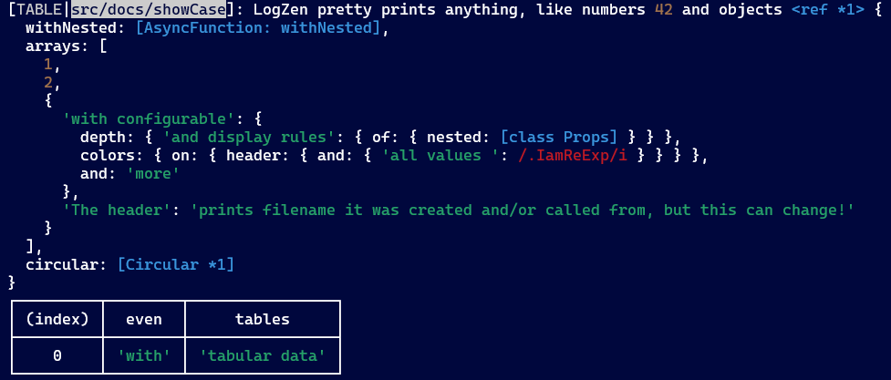
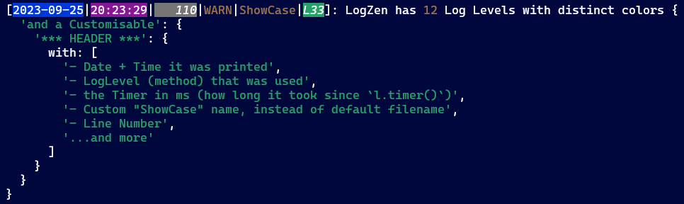
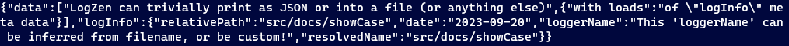
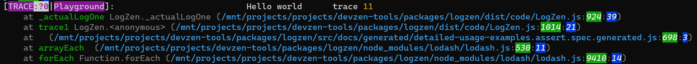
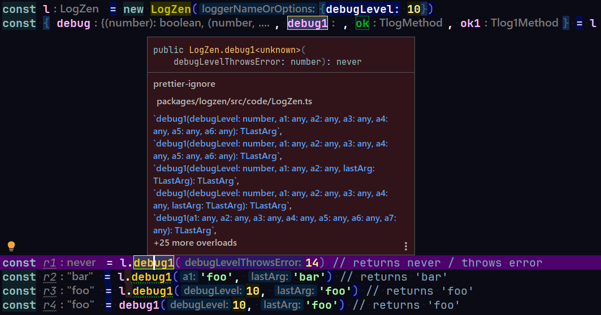
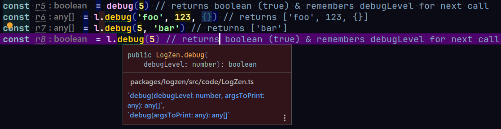
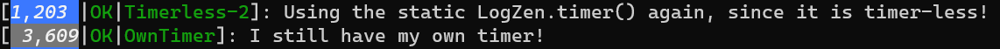

A radically powerful (yet familiar) Logger, with emphasis on Granularity & Context, Debugging BigApps & Observability, but also beautiful output & configurability.
Fully configurable, outputs anywhere (stdout, files etc), colorful inspected values or JSON or anything you want, customizable Headers with automatic timers & Date/Time plus many more context-aware cascading options.
Written in TypeScript & extensively typed & tested (hint: these docs are actually tests!).
NOTE: Works/tested only on nodejs (maybe bun?), but browser/bun/whatever compatibility & testing coming in the future.
NOTE: These docs are hosted at https://neozen.dev/logzen (OR locally with $ npx npm-run-all docs:build docs:serve)
Jump to Documentation & Examples
LogZen is Context/Path Aware Logger that pretty prints everything, is very configurable (almost everything is customizable) and solves the Granularity Problem. It has unique features like:
All known Log Levels with more granularity at debug() & trace()
Cascading Options to really control the when, where and how to do logging, leading to control of granularity
Customizable Header with filenames, Timers, Date & Time, line numbers and more
Path Replacements & Shortcuts to shorten filenames & make granularity a snap
Custom Outputs to print txt/json/xml/anything on stdout/files/everywhere easily and even easier
Args Pass-Through to l.log() everywhere, even inside other expressions or function calls etc
Kids that inherit/override parent options, and then echo parents' log methods, so you can log in different places at once (with different options).
A simple API & much more...
LogZen is a Context/Path Aware Logger, that is making it very capable in tailoring and reconfiguring your Logging requirements in large systems, even on the fly. This gives rise to fine granularity and full control of logging levels (and all other amazing options) per filePath, or per logger instance, or per Kid that is inheriting from a parent, or whatever incredible rule you can devise. And it doesnt have to be statically at App Boot time, you can even re-configure logging options dynamically at runtime (responding to events, errors, attacks etc)!
At the heart of it is a Dynamic Cascading Options system that is configurable per instance, per path, per parent etc, in a cascading manner. But all of this is automatic and transparent to you, the developer. You can change the default options once at runtime, and all instances will be (potentially) affected!
LogZen has compatibility with console.xxx() where it matters & while enhancing it. LogZen can be extended to do things you could not do before!
Jump to Documentation & Examples
Very simple to use API with unique & powerful features easy at hand.
Unique path-aware Cascading Options system. It's aware where the logger lives (& logs) and what options apply to it (at boot or on the fly).
Pretty prints nested objects & arrays and all other printables in varying ways, colorful & nested but most importantly ready to be used in different contexts (eg strict JSON with "double quotes" or PoJSo or respecting/ignoring object's toString()) method etc, having solved circular refs etc. Print options are fully configurable (eg nested depth, length, colors etc) with options mostly compatible to node util.inspect(). Never see printouts like: { 'someObject': [Object] } or non-copy-paste-ables like Animal {kind: 'Lion', name: 'Shiba', friends: ['Nala', length: 1]} but instead: 
12 Log Levels to choose from, conforming to severity ordering specified by RFC5424.
Rename paths for easier tracking & Cascading Options config of different parts of your App. Easy to setup and use less verbose naming.
Kid Logger instances that follow & echo parent Loggers, while perhaps overriding some options (for example different Output or logLevel etc).
Customisable colorful Header before your printable args, with distinct color for each logLevel, with useful info (names and/or logPaths, Calling File, Line Number, customizable Date & Time, automatic Timers etc). 
The debug() method also accepts a debugLevel, for high grained control (remember that l.debug() outside AND the one inside the loop?). Same for trace() with traceLevel.
Arguments Pass Through so you can log everywhere, even inside other expressions or function calls eg. myFunction(l.log1(suspiciousArg), anotherArg)! For single argument (via the .xxx1() shortcut) or multiple arguments via ... & .slice().
Outputs via console.xxx() print methods but can trivially adapt to print via Custom Outputs at stdout, files, other Loggers & transports (eg Winston, DataDog, Kafka etc), streams etc, in either plain text or JSON (built-in). You can easily configure for CSV, XML and anything else. 
Compatible (not 100% but...) with console.xxx methods, so can be a drop in replacement (i.e replace console. with l. (or logger. or whatever)
Improved .trace(), colorfully, without internal noise & more:

Benchmarked to be on average as fast as console.log (can be slightly slower or faster depending on options)
Jump to Documentation & Examples
Existing Logging solutions have a limited LOG_LEVEL: DEBUG and similar levels. But if you enable a high logLevel in your App, you're in trouble:
You'll usually open the floodgates to a zillion massages, often irrelevant to the issue you're looking at. It's not easy to setup granularity and focus on specifics, like we like to do with test frameworks, i.e fit('it works', () ={}) or it.only('it works', () ={}).
You 'll often need to restart the App to see them, as the contemporary best practice seems to be to configure logging via a static ENV config at boot. This is very limiting for logging, which should be reactive & dynamic!
You might even have to add or change debug code, which means a whole redeployment which can take a long time.
LogZen allows you to easily enable/disable logLevel & debugLevel on a path and below/above, with an even higher/lower debugLevel on a specific file/subpath. It can be done from config & a bit of LogZeny magic at dev time (no need for changing code).
LogZen is great for Debugging Big Apps with fine granularity and full control of where, when and how to print.
The logLevel (and debugLevel, more granularity) and all other Options can be configured to apply exactly where YOU want. LogZen instances end up with different effective options dynamically, to cater all your needs in your BigApp.
As a practical scenario, imagine you're working on BigApp at the /src/new/shiny/module, and you might have all loggers in that sub-module with DEBUG enabled, while working on it. But for the rest of the BigApp, you only want to have WARN enabled. This is trivial with LogZen!
Another scenario, a LogLevel with low priority like WARN is often what we need/have in production, and this makes sense most times. But what if we receive an alarming number of "SomeWeirdException" at /some/app/NewSubModule at 03:00 AM? Wouldn't it be great if the logLevel is automatically raised a bit for the whole service or sub-module (eg to INFO) and a lot more for the affected module (eg DEBUG)?. This again is trivial with LogZen, you can just LogZen.updateLogPathOptions() them!
The scenarios are limitless!
(is LogZen the solution to it?)LogZen is featuring automatic created-from & called-from paths info, along with cascading options (eg logLevel or debugLevel, separately, along with all other options), that can change per instance or per file path.
Changes can occur at boot or even at runtime, since defaults & filePath options can also change at runtime to affect all instances!
Since each LogZen instance is aware of:
the filePath it was created in, along with its logLevels, debugLevels and any other Options.
the filePath it's executing (i.e. logging) from.
The current "version" of its effective options, for that path it resides in, its parents and instance options.
it can make decisions, based on your rules, to decide exactly WHEN to print (or not)!
You can pass options at instantiation or have filePath defaults (recommended), and make decisions on the fly to match your needs. LogZen instances check for options changes before each execution and refresh their effective options accordingly, if their relevant options have changed.
Jump to Chapter 6 - Cascading Options to see the True Power of LogZen, or read the whole Tutorial!
IMPORTANT NOTE: This file is generated from integration tests, so that all examples here started their lives as executed and tested specs.
DO NOT EDIT THIS FILE permanently, as it is generated by executing ts-node src/docs/jest-docs/detailed-usage-examples.generator.spec on every npm run dev build.
Awesomely, it executes, even without Jest!
And instead of testing, it just generates 3 files:
the entirety of readme.md
2 executables inside src/docs/generated,
one is actually a test suite using nodejs assert
the other is a plain executable .js, with docs & expected results as comments
So you can play with these examples easily!
IMPORTANT NOTE: We should be executing this file from this package's root, with this specific filename:
╰─$ node dist/docs/generated/detailed-usage-examples.executable.spec.generated.js
as all paths are assumed to be relative to this path! If you execute from different CWD path, it 'll will fail.
Note: You can look & play with the generated assert-based light-testing suite, or the simple executable examples at dist/docs/generated.
LogLevel and log() methods - Choosing What Severity To Print
The debug()/trace() methods & debugLevel/traceLevel checks - debug with confidence
Args Pass through - log anywhere, even inside function calls
LogZen logging methods, console.xxx() compatibility & enhanced methods
$ npm i @neozen/logzen
How to require / import LogZen:
const { LogZen } = require('@neozen/logzen')
OR
import { LogZen, ELogLevel, Options, /* etc */ } from '@neozen/logzen' // TypeScript/ES etc
The LogZen convention is to have one LogZen instance per file, simply named l.
const l = new LogZen() // can pass options
or you can pick your own naming convention, like logger etc. In this tutorial we'll create multiple instances for example's sake, numbered after the chapter & example number, eg l1_1, l1_2, l2_1 etc.
You can also use individual log methods as standalone, without the l. prefix, as they are bound to the instance:
const { log, log1, willLog, warn, warn1, /*..etc..*/ } = new LogZen()
Now let's construct a LogZen instance with no args, and print the mandatory "Hello World":
const l1_1 = new LogZen()
l1_1.log('Hello world from node version', process.version)
// [LOG|dist/docs/generated/detailed-usage-examples.executable.spec.generated]: Hello world from node version v20.18.0
We see that the relative filename of this file was printed as the Header name. We can affect this in surprising ways, read on.
The LogZen API is quite simple:
const l = new LogZen() // no instance options - the preferred no-config way!
const l = new LogZen({...options}) // add instance options, apply only to this instance.
const l = new LogZen('aLoggerName', 30) // an options shortcut: pass `loggerName` & `debugLevel`
Also see conventions
l.log() LogLevel methodsFor each of the 12 Loglevels (fatal, critical, error, warn, notice, ok, info, log, verbose, debug, trace, silly) PLUS special "table" & "dir", each instance has 3 methods:
logLevel allows), for examplel.warn('This number is fishy', 13)
logLevel in the instance's effective options. For examplel.willWarn() // returns true/false
l.warn1('This argument is fishy', fishyNumber)
to help with arguments passing - head to Chapter 11 Args Pass through for more details.
NOTE: Methods are bound to the instance
const { log, log1, willLog, warn, warn1, /*..etc..*/ } = new LogZen()
log('foo') // no need for l.log()
so they can be used standalone, without the l. (or logger. etc) prefix.
More information:
Same set of methods exists for table & dir - see console.table() for its enhanced usage.
See Chapter 4 LogLevel for details about LogLevels (a.k.a Severity logging).
The debug() & trace() can optionally have an extra level check
l.inspect(val, inspectOptions?): Use node util.inspect() on any value. It's actually using an extracted util.inspect() from node has the same inspectOptions type. It is using the effective resolved options of the instance, but you can override them.
l.clearScreen(): clear the TTY Screen.
l.c: exposes the ansi-colors package, as just c per its own convention. So you can use l.c.red('foo') anywhere! You can leverage the global naming of LogZen instances via LogZen.addPathReplacements({'[~]/..': l.c.bgGreenBright.black('neoTerm')} and now you have a wonder colorful title base for all you loggers!
l.options({...newOptions?}): updates the effective options of the instance & returns the instance. On the contrary l.options(): returns the instance's current effective Options. See Chapter 6.6 Accessing & Updating Options
l.timer() and siblings: starts a timer on the instance. Next time you print with any l.xxx() print method on that instance, it displays how long it took (in millisecs) at the Header. Has more quirks & options, see Chapter 10 Timers.
LogZen.updateLogPathOptions(): Add LogZen Options, that apply to specific logPaths (and all sub-logPaths below it).LogZen.updateLogPathOptions(
{
"/": {...rootOptions},
"some/log/path": {...someLogOptions},
"another/log/path": {...anotherLogOptions}
}
)
LogZen.addPathReplacements(): add pathReplacements, to replace long paths with a shorter & print-friendly names:LogZen.addPathReplacements(
{
'src/path/to/my-module': 'My Module',
'path/to/replace/cause/it/is/too/long': 'Long Path',
'another/long/path/to/replace': 'Replaced Path',
},
stackDepth // optional, in case LogZen is wrapped inside other functions, to calculate calling file properly
)
The two methods play well together, head to Chapters 3 & 6 for details.
In both cases, stackDepth is only needed if your LogZen is wrapped inside other files/functions, and you call these static methods from there. So, adjust accordingly.
LogZen.reset(): reset all logPath options - instances just use instance (& parent) and built-in default options.
LogZen.clearScreen(): clear the TTY screen - same effect as instance l.clearScreen()
LogZen.timer() and siblings: starts a timer, applicable to all timer-less instances. Otherwise exactly like the instance counterpart, as it shares implementation.
LogZen.inspect(val, inspectOptions?): util.inspect (i.e pretty print) any value. Like the instance counterpart, but uses the default options which can be changed.
And that's it! You're ready to use LogZen ;-)
NOTE: You almost never have to name your loggers per instance. It is actually recommended that you dont name your loggers per instance (or pass most of the instance options, most of time (@todo: link to ## 6.6 Accessing & Updating Options)!
99% of the time you're fine with just a const l = new LogZen() in each file (for static logging development).
See next Chapter 3 - Path Replacements & also Chapter #6 - Cascading Options as to why.
Let's give our logger a hard-coded loggerName, on a new instance l1_2. This is done either as options.loggerName OR simply the 1st string argument
const l2_1 = new LogZen({ loggerName: 'LogZen Playground' })
// const l1_2 = new LogZen('LogZen Playground') // same as above
l2_1.warn('Is something fishy with your current Logging solution?')
// [WARN|LogZen Playground]: Is something fishy with your current Logging solution?
This time l1_2 used the hardcoded loggerName we gave it on its Header.
You can use Path Name Shortcuts for naming your LogZen instance, as a shortcut and to reduce hardcoded refactoring friction.
The path name shortcuts are:
'[~]' relative file path name (path from CWD)
'[@]' current filename (no path)
'[/]' absolute file path (full path from root)
In all cases, the file extension is trimmed.
'[~]' Relative File Path NameThe '[~]' is replaced with relative file path name:
const l2_3 = new LogZen('[~]')
l2_3.ok('The "[~]" is replaced with current relative filePath.')
// [OK|dist/docs/generated/detailed-usage-examples.executable.spec.generated]: The "[~]" is replaced with current relative filePath.
You can also navigate around '[~]', and the path is resolved internally:
const l2_3_1 = new LogZen('[~]/../Playground')
l2_3_1.notice('replaced with current filepath and upath.join()-ed')
// [NOTICE|dist/docs/generated/Playground]: replaced with current filepath and upath.join()-ed
'[@]' plain FilenameSimilarly, the '[@]' is replaced with current FileName (without path and extension):
const l2_4 = new LogZen('[@]')
l2_4.info('The "[@]" is replaced with current filename (without path and extension)')
// [INFO|detailed-usage-examples.executable.spec.generated]: The "[@]" is replaced with current filename (without path and extension)
You can also add stuff around it, navigation included (useless in this case of a single filename)
const l2_4_2 = new LogZen('LogZenExamples/[@]')
l2_4_2.verbose('The "LogZenExamples/[@]" is replaced with current filename, and everything else')
// [VERBOSE|LogZenExamples/detailed-usage-examples.executable.spec.generated]: The "LogZenExamples/[@]" is replaced with current filename, and everything else
'[/]' Absolute File PathThe '[/]' is replaced with absolutePath, similarly to above:
const l2_5 = new LogZen({
loggerName: '[/]',
// these 2 overrideXxx can be used ONLY at constructor options.
// They are needed here only for the example to work independently
// of where they reside on the filesystem
overrideAbsolutePath: '/some/absolute/path',
overrideCWD: '/',
})
l2_5.warn('AbsolutePath can be used as a name!')
// [WARN|/some/absolute/path]: AbsolutePath can be used as a name!
Now lets call a few functions in another file, that print using LogZen instances created inside them.
someOtherFileExternalLogger('Yuuuuge path name')
// [INFO|dist/docs/anotherPath/someOtherFile]: external someOtherFile Yuuuuge path name
We see it prints its own filename as a name, as expected
Similarly with an instance that is created everytime we call someOtherFileInternalLogger()
someOtherFileInternalLogger('Yuuuuge path name again')
// [LOG|dist/docs/anotherPath/someOtherFile]: internal someOtherFile Yuuuuge path name again
As we see, they both use the filePath where the LogZen instances were created in, which is useful but also verbose.
Logger Naming is great so far, but has serious issues:
Automatic log paths (i.e. assigned from filesystem) can be very verbose and hard to follow visually & conceptually.
Manually setting a custom loggerName for each instance is very mundane.
None of them is resilient change/refactoring & testing (eg. if you want to rely or logger names)
None of them is great for conceptual naming (eg. My Project@entities/create), irrespective of physical location.
How can we improve on those?
We can use pathReplacements, an optional step to automatically shorten filepath names.
The idea is, that if a LogZen instance's logPath matches a pathReplacement, it will replace the matched part of the path with the print-friendly name given.
Let's set up PathReplacements:
LogZen.addPathReplacements({
// when this path matches ----> replace with this
'dist/docs/generated/detailed-usage-examples.executable.spec.generated': 'LogZen Playground',
// we can also use it for external dependencies, if those use LogZen
'node_modules/@neozen/zen/dist': 'Zen',
})
How it works: The logPath part (left hand side) has to to correspond to an actual filepath in your FS, since it is resolved at runtime. The path match can be partial.
But the print-friendly name (right hand side) doesn't have to correspond to it, it's just for printing and can follow your logical app partitioning or any other naming.
Now lets see what the name will be on the Header:
const l3_1 = new LogZen()
l3_1.log('Using LogZenPlayground title, nothing is fishy now!')
// [LOG|LogZen Playground]: Using LogZenPlayground title, nothing is fishy now!
LogZen knows how to replace lengthy 'dist/docs/generated/detailed-usage-examples.executable.spec.generated' (i.e. this file relative path) to 'LogZen Playground'.
We can call LogZen.addPathReplacements({'some/path': 'someReplacement'}) multiple times, adding to the collection of logPath replacements (and replacing existing paths in doing so).
In #3.1 we did set pathReplacements for current relative filePath (i.e dist/docs/generated/detailed-usage-examples.executable.spec.generated), but we hard coded it, hence it is very verbose, error-prone and not resilient to moving/refactoring the file.
There's a shortcut for that!
Use the '[~]' to represent this "current relative filePath", relative to CWD.
You can also continue building from it, eg '[~]/some/other/path'. Or even go backwards, to include more files in the replacement:.
LogZen.addPathReplacements({
'[~]/../..': 'LogZen Docs', // This '[~]/../..' path is equivalent to
// `dist/docs/generated/detailed-usage-examples.executable.spec.generated/../..`
// which in turn resolves to
// `dist/docs`
})
By navigating back one or two levels, we can give a useful name to ALL our LogZen instances, in all files that fall into this path, ie. your whole app! Each LogZen instance will have the replaced path as a "basename", plus the actual relative path that remains. All with a single statement at your index.js / main.js etc.
PathReplacements are quite useful, as we can use shorter logger names instead of verbose filePaths, in an automatic and declarative way. It works with partial matches as well, so you can have My Project@entities/create.
In the next example, we don't have a full replacement but a partial one, since not exact match was found in our replacements:
someOtherFileInternalLogger('It will now use a partial pathReplacement')
// [LOG|LogZen Docs@/anotherPath/someOtherFile]: internal someOtherFile It will now use a partial pathReplacement
This time LogZen replaced the sub-path 'dist/docs'
to 'LogZen Docs' and resolved the remainder path.
Instances use replacements even if the instance was created before we added the pathReplacements.
Remember l1_1? It had no constructor args and hence was using its created filepath for header name. Not anymore:
l1_1.log('Hello world again, from updated l1_1, using the pathReplacement set to defaults!')
// [LOG|LogZen Playground]: Hello world again, from updated l1_1, using the pathReplacement set to defaults!
A loggerName was NOT passed when l1_1 was created, but now it can resolve to a shorter name, even if it was created BEFORE we added pathReplacements.
Same case for LogZen instances that were created before LogZen.updateLogPathOptions() was called, since the options update and a new partial match was found:
someOtherFileExternalLogger('It will now use a partial pathReplacement, even if created before.')
// [INFO|LogZen Docs@/anotherPath/someOtherFile]: external someOtherFile It will now use a partial pathReplacement, even if created before.
LogPathReplacements arent useful just for printing a prettier name! They can be used in conjunction to Cascading Options, head to Chapter 6
The logic behind logLevel is similar to other popular loggers:
Each logLevel corresponds to a severity number, where the lower the number is, the larger the severity and importance it represents.
The higher the logLevel of your LogZen effective options is, the less important messages get their chance to print. You get more "verbose" and "detailed" logs with high logLevel, you get only the important ones with low logLevel.
Effectively, the lower the logLevel, the more close to production your App is (usually just WARN or NOTICE is used in production). And vise versa, the higher the logLevel the closer the App is in develop (& debugging) time.
LogLevels are not just conforming to the severity ordering specified by RFC5424 and similar to all known loggers out there, but also hold some opinionated semantics.
ELogLevel enumThey are defined in enum ELogLevel and you can grab their descriptions at LogLevelDescriptions):
0 = NONE : Set logLevel to 'NONE' in your App to disable all logging.1 = fatal : The service/app is going to stop or become unusable soon.2 = critical : Service/App in critical condition, an operator should look into it.3 = error : Error in particular request/operation, but the service continues servicing other requests.4 = warn : Something looks fishy, like an operation taking too long or having too few/many results, but system still functional5 = notice : Something noticeable happened that is perhaps useful or imperative to know about.6 = ok : Some operation finished and was OK, we might care about that.7 = info : Some extraneous info about some operation, eg operation finished8 = log : Extra, casual logging we almost shouldn't care about9 = verbose : Verbose logging that should be looked at rarely / when we have issues10 = debug : Only for debugging, like entering and leaving some function / subsystem with input and results. The debugLevel can further control the granularity. If logLevel ends up as undefined in effective options, debug is the implicit default.11 = trace : Prints the call stack when printing, similar to console.trace. Use traceLevel in effect to control its granularity.12 = silly : Temporary silly / development only messages, so they can easily be found & removedEach of these logLevels (except NONE) corresponds to a method with the same name (eg l.warn(), l.log() etc), plus one for willLog() check & log1() variant etc.
They can be used as l.log() or standalone, as they are bound to the instance:
const { fatal, fatal1, willFatal } = new LogZen()
fatal(someVal, someOtherVal, /*...moreArgs */)
fatal1(someVal, someOtherVal, /*...moreArgs */)
willFatal()
const { critical, critical1, willCritical } = new LogZen()
critical(someVal, someOtherVal, /*...moreArgs */)
critical1(someVal, someOtherVal, /*...moreArgs */)
willCritical()
const { error, error1, willError } = new LogZen()
error(someVal, someOtherVal, /*...moreArgs */)
error1(someVal, someOtherVal, /*...moreArgs */)
willError()
const { warn, warn1, willWarn } = new LogZen()
warn(someVal, someOtherVal, /*...moreArgs */)
warn1(someVal, someOtherVal, /*...moreArgs */)
willWarn()
const { notice, notice1, willNotice } = new LogZen()
notice(someVal, someOtherVal, /*...moreArgs */)
notice1(someVal, someOtherVal, /*...moreArgs */)
willNotice()
const { ok, ok1, willOk } = new LogZen()
ok(someVal, someOtherVal, /*...moreArgs */)
ok1(someVal, someOtherVal, /*...moreArgs */)
willOk()
const { info, info1, willInfo } = new LogZen()
info(someVal, someOtherVal, /*...moreArgs */)
info1(someVal, someOtherVal, /*...moreArgs */)
willInfo()
const { log, log1, willLog } = new LogZen()
log(someVal, someOtherVal, /*...moreArgs */)
log1(someVal, someOtherVal, /*...moreArgs */)
willLog()
const { verbose, verbose1, willVerbose } = new LogZen()
verbose(someVal, someOtherVal, /*...moreArgs */)
verbose1(someVal, someOtherVal, /*...moreArgs */)
willVerbose()
const { debug, debug1, willDebug } = new LogZen()
debug(someVal, someOtherVal, /*...moreArgs */)
debug1(someVal, someOtherVal, /*...moreArgs */)
willDebug()
const { trace, trace1, willTrace } = new LogZen()
trace(someVal, someOtherVal, /*...moreArgs */)
trace1(someVal, someOtherVal, /*...moreArgs */)
willTrace()
const { silly, silly1, willSilly } = new LogZen()
silly(someVal, someOtherVal, /*...moreArgs */)
silly1(someVal, someOtherVal, /*...moreArgs */)
willSilly()
Lets print Hello World on each of our LogLevel methods Note: these outputs have no assertions, but they check all methods are bound :-)
const l0 = new LogZenOriginal({
header: true,
loggerName: 'Playground',
logLevel: 'silly',
})
_.each(allLogMethodNames, (logMethodName) => {
const logLevelToPrint = ELogLevel[logMethodName] || logMethodName + ' is NOT a LogLevel method'
const willLogMethod = l0['will' + _.capitalize(logMethodName)] // willLog etc
if (willLogMethod()) {
const logMethod = l0[logMethodName]
logMethod('\t\t\t\tHello world\t', logMethodName, logLevelToPrint)
const logMethod1 = l0[logMethodName + '1']
logMethod1('\t\t\t\tHello world\t', logMethodName, logLevelToPrint)
}
})
To set the allowed logLevel of your App, you can use either numeric or lowercase/uppercase/mixedcase string in the options, eg {logLevel: 'WARN'} is equivalent to {logLevel: 'warn'}.
logLevel of LogZenSo far we haven't touched logLevel in an example (either at an instance options or logPathOptions that we'll cover shortly). If logLevel is undefined in the options, it defaults implicitly to debug, so you can use it right away:
const l4_1 = new LogZen()
l4_1.debug(`Debug something`)
// [DEBUG:?0|LogZen Playground]: Debug something
The [?0] simply means we're not specific about debugLevel (we 'll get to it shortly) and 0 is an implicit default.
The l.silly() method won't print anything by default, cause debug is the default logLevel.
l4_1.silly('Something silly')
// Nothing printed
But if we change the defaults, even at runtime for previously created instances like l4_1:
LogZen.updateLogPathOptions({
'/': {
logLevel: 'silly',
},
})
l4_1.silly('Something more silly needs to be printed')
// [SILLY|LogZen Playground]: Something more silly needs to be printed
All log methods conform to TlogMethod type (with a small variation on .debug() & .trace()), and are bound to the instance & hence all can be used as standalone functions:
const { info, debug } = l4_1
info('This is not that silly')
l4_1.info('This is not that silly') // same as above
debug('debug is also bound')
// [INFO|LogZen Playground]: This is not that silly
// [INFO|LogZen Playground]: This is not that silly
// [DEBUG:?0|LogZen Playground]: debug is also bound
l.debug() / l.trace() methods & debugLevel / traceLevelThe l.debug() / l.trace() methods are special to other methods, as they conform normally to logLevel like all others, but also have an optional debugLevel / traceLevel check along with logLevel.
NOTE: In these examples we'll mention only l.debug() & debugLevel, but the exact same logic applies to trace() / traceLevel (and the share the same internal implementation).
debugLevel (& traceLevel) checkA debugLevel is any integer range of your choosing (0-100 seems reasonable, but there's no restriction).
If your instance's effective options debugLevel is greater or equal to someDebugLevel in
l.debug(someDebugLevel, 'Debug messages')
then the l.debug() will print, otherwise it won't.
The debugLevel allows for fine-grained debugging, where types and places of debug messages can be turned on and off easily, declarative and with fine granularity (especially when used with pathOptions, see next chapter).
Let's see some examples for the 2 ways to use l.debug():
debugLevel / traceLevel check, then printIf 1st argument is a number, and you have some more args, for example :
const l5_1 = new LogZen()
l5_1.debug(20, 'This debug message prints only if debugLevel >= 20, which isnt')
// Nothing printed
It will print only if both logLevel >= debug & debugLevel >= 20, which is not the case (yet).
Let's change default debugLevel (cross-instance since it is a default, see next section for details):
LogZen.updateLogPathOptions({
'/': {
debugLevel: 20,
},
})
l5_1.debug(20, 'This debug message with level 20 will now print, cause of debugLevel: 20 in default options')
// [DEBUG:20|LogZen Playground]: This debug message with level 20 will now print, cause of debugLevel: 20 in default options
Let's create a new LogZen instance, with debugLevel baked in its instance options:
const l5_2 = new LogZen({ debugLevel: 50 })
l5_2.debug(50, 'A detailed', 'debug message', 'will print cause of debugLevel: 50 in instance options')
// [DEBUG:50|LogZen Playground]: A detailed debug message will print cause of debugLevel: 50 in instance options
But if l.debug() call was using a larger debugLevel, it will NOT print it:
l5_2.debug(
51,
'A more detailed debug message will NOT print, cause options `debugLevel: 50` and debugLevel check at 51'
)
// Nothing printed
The previous l5_1 instance is not affected, as only l5_2 instance options have debugLevel: 50 while l5_1 has only 20
l5_1.debug(50, 'This debug message will not print')
// Nothing printed
debugLevel / traceLevel check only, without printing.You can check if some debugLevel will print, without printing anything.
If 1st argument of l.debug(someDebugLevel) is a number AND no other args follow (e.g. l.debug(50)), the call is a check of whether l.willDebug().
This is useful to prevent further lengthy processing, for things that don't need to print anyway with current debugLevel or to group together multiple statements under an if (l.willXxx()) {...} block.
This check is special, as it is "remembered" for next l.debug() call without a debugLevel check (for the specific instance and immediate call only).
For example:
if (l5_2.debug(50)) {
const debugInfo = 'doSomeDebuggyStuff()'
l5_2.debug(
'.debug() without explicit debugLevel, will print with implicit debugLevel=50, since l5_2 has debugLevel: 50',
debugInfo
)
// It will "remember" debugLevel = 50 from previous \`l.debug(50)\`
// since we have not explicitly tested for a debugLevel,
// and will print only if it has reached it
l5_2.debug(
'.debug() will print AGAIN with implicit debugLevel=50, as we didnt use any debugLevel check yet'
)
}
// [DEBUG:!50|LogZen Playground]: .debug() without explicit debugLevel, will print with implicit debugLevel=50, since l5_2 has debugLevel: 50 doSomeDebuggyStuff()
// [DEBUG:!50|LogZen Playground]: .debug() will print AGAIN with implicit debugLevel=50, as we didnt use any debugLevel check yet
The exclamation mark in DEBUG:!50 indicates that 50 debugLevel check is remembered, a.k.a implicit.
Similarly:
if (l5_2.willDebug(51)) {
const debugInfo = 'doSomeDebuggyStuff()'
l5_2.debug('Found some debug info', debugInfo)
}
// Nothing printed
The l.debug(debugLevel) and l.willDebug(debugLevel) are used exactly the same way (sharing implementation), but willDebug() accepts only 1 debugLevel check argument and no other print args.
let result
result = l5_2.debug(50)
// Nothing printed
// result === true
result = l5_2.willDebug(50)
// result === true
result = l5_2.debug(51)
// Nothing printed
// result === false
result = l5_2.willDebug(51)
// result === false
There are actually equivalent willXXX methods for all logLevels:
const l5_3 = new LogZen({ logLevel: 'ok' })
result = l5_3.willError()
// result === true
result = l5_3.willOk()
// result === true
result = l5_3.willInfo()
// result === false
result = l5_3.willLog()
// result === false
result = l5_3.willDebug()
// result === false
result = l5_3.willDebug(0)
// result === false
The l.debug(aNumber) returns boolean & the l.debug1(aNumber) will throw (see Pass Single Arg Without Spread with l.xxx1()).
There are different variants when using more args also.
When using TypeScript, the call signatures/types are correctly inferred (in your IDE/compiler).
For example .debug1(number)) throws Error:

Similarly for .debug() & .trace(), you get the correct inferred types (eg boolean for .debug(number)):

The options system and logPathOptions is where LogZen really shines in how you organise selective output in your Apps.
You can have different options, for different parts of our system, and you can change those dynamically & specifically even at runtime, maybe responding to circumstances.
There are 3 places to configure options (all are optional):
You can pass Options for every instance at construction, that apply only to that instance:
const l6_1 = new LogZen({
// options type is OptionsAtConstructor
logLevel: 'silly',
debugLevel: 50,
})
You also have the case of the instance having a parent, in which case it just overrides it's parent Options as well - see Chapter 12 Kid Instances.
Default Options are what all instances fallback to, when any specific option property is missing from all other options that were collected (via _.merge()). They are built in and SHOULD NOT BE CHANGED (i.e dont mutate the defaultOptions object)!
Sitting between instance and default options, we can have options that apply to a specific LogPath AND all sub-paths below it. These options stand between instance and default options, only to the specified path/sub-paths.
The LogPath of an instance is the filepath where it was created (i.e new LogZen()), relative to CWD.
LogPath Options are stored in a tree structure internally, just like you OS filesystem. They are matched & override in order of specificity, from most specific to least specific.
The least specific path, is of course the root of your App (i.e /), which will correspond to the CWD and apply as a fallback root-default to all LogZen instances:
LogZen.updateLogPathOptions({
'/': {
logLevel: 'warn',
debugLevel: 0,
},
})
Let's test those together. The instance options naturally override the defaults:
l6_1.silly('Something silly will print, cause of instance options')
// [SILLY|LogZen Playground]: Something silly will print, cause of instance options
Lets create a new instance l6_2 without any instance options:
const l6_2 = new LogZen()
l6_2.silly(
'But l6_2.silly() WILL NOT print, cause default options logLevel = `warn` and l6_2 doesnt have its own instance options'
)
// Nothing printed
Lets change the options for a specific path:
LogZen.updateLogPathOptions({
// type is {logPath: Options} (mainly, plus few shortcuts)
// eg /src/docs or /dist/docs depending on where it executes from
[`${rootSrcDir}/docs`]: { logLevel: 'silly' },
})
l6_2.silly('l6_2.silly() will now print, cause of logPathOptions')
// [SILLY|LogZen Playground]: l6_2.silly() will now print, cause of logPathOptions
Options cascade in this order:
instance Options override both defaultOptions & logPathOptions, even for matched logPaths. They also override Parent instance options, if any.
parent instance options also override logPathOptions & defaultOptions - see Chapter 12 Kid Instances.
logPathOptions in turn override the defaultOptions, but only for matched logPaths. Its important to understand, that each instance has a number of potential LogPath options to consider, starting from the closest matched path (eg /src/code/some/module, down to the root of your App's filesystem (eg /src), provided you have set any logPathOptions for those paths. Naturally, the closest matched path overrides the more generic ones.
defaultOptions apply if a specific option key is not set in neither of the above.
Each instance has its own Effective Options, which are resolved and update automatically, only when needed! If there's any options changes:
on instance
on instance's parent
on global logPathOptions, all those that match in the path of the instance
the Effective Options update and you will always get an up-to-date version.
Note that all options are deeply merged, not just Object.assign() - see lodash _.merge to see how this works.
You can observe Effective Options with:
result = l6_1.options()
// result === {"colors":true,"stringColors":true,"debugLevel":50,"header":{},"inspect":{"breakLength":150,"colors":true,"compact":50,"depth":10,"maxArrayLength":30,"maxStringLength":500,"strings":false},"logLevel":"silly","logLevelNumber":12,"logLevelString":"silly","output":"std","stackDepthCalled":0,"stackDepthCreated":0,"tableLogLevel":8,"trace":{"maxStackDepth":5,"omitInternals":true,"realTrace":false},"print":{"colors":{},"instanceClass":true,"argsFormat":"array","inherited":false,"emptyItem":"\"[Empty item]\"","nesting":false,"symbolFormat":"for","undefinedInJSON":"[Undefined]","objectProp":"toString"}}
NOTE: dont update this returned object because your changes will be lost!
To update an instance's options, we pass the new options into the call:
const someNewOptions = { colors: false }
result = l6_1.options(someNewOptions).options()
// result === {"colors":false,"stringColors":false,"debugLevel":50,"header":{},"inspect":{"breakLength":150,"colors":false,"compact":50,"depth":10,"maxArrayLength":30,"maxStringLength":500,"strings":false},"logLevel":"silly","logLevelNumber":12,"logLevelString":"silly","output":"std","stackDepthCalled":0,"stackDepthCreated":0,"tableLogLevel":8,"trace":{"maxStackDepth":5,"omitInternals":true,"realTrace":false},"print":{"colors":{},"instanceClass":true,"argsFormat":"array","inherited":false,"emptyItem":"\"[Empty item]\"","nesting":false,"symbolFormat":"for","undefinedInJSON":"[Undefined]","objectProp":"toString"}}
First it updates effective options, and then returns the logZen instance, so we .options() it to get the updated options.
NOTE that the new passed options are _.merge-ed to the existing instance options.
NOTE: Development best practice, is to not to set logger options per instance, most of time.
For static usage, ie your Logger's behaviour doesnt change at runtime, you should use logPathOptions instead, as they are easier to manage.
But if you need Dynamic logging behavior (eg logger options respond to events, or a logger is configured when called in a test etc), then l.options({}) is your best friend, for these few options that will change only (eg the logLevel')!
Let's see a more involved example:
Hypothetical Scenario: Assume you're working on a KNOWN BUG inside a file under unstable/newApi/emergencyBuggyCode. Some other parts of the system are KNOWN to be very stable, and you dont need their debugging noise. Other parts though are fishy, with UNKNOWN stability.
Assuming MyProject structure is:
my-project
- src
- code
index.js
- stable
- library
- workingFineALongTime.js
- unstable
- newApi
- emergencyBuggyCode
- problematicCode.js
- seemsWellTested
- tests
...
First let's do some fresh path shortening on our virtual dir structure, using pathReplacements:
LogZen.addPathReplacements({
'src/code': 'MyProject',
'src/code/unstable/newApi/emergencyBuggyCode': 'BuggyCode',
// we can also rename external modules that use LogZen
'node_modules/some-awesome-lib/index.js': 'AwesomeLib',
})
Now let's configure the options for our paths, which are cascading onto their sub-paths.
We need to configure the LogZen loggers that reside at a specific path or below, to different logLevel and debugLevel settings, either at boot or at runtime.
As you will see, this dynamic nature allows you to change Options on the fly, with exact precision.
Note that we can use the naming of the Path Replacements we did shortly back:
LogZen.updateLogPathOptions({
// logPathOptions allow you to use the pathReplacements we've declared above,
MyProject: { logLevel: 'info' },
// using colon `:` to separate matched replacement and rest of path.
'MyProject@/stable': { logLevel: 'ok' },
'MyProject@/unstable': { logLevel: 'verbose', debugLevel: 10 },
// shortcuts: number & string instead of {}
// 'warn' is a string shortcut, equivalent to { logLevel: 'warn' },
'MyProject@/stable/library/workingFineALongTime': 'warn',
// 40 is a number shortcut, equivalent to { debugLevel: 40 }
'MyProject@/unstable/newApi': 40,
// this and the above should merge into { logLevel: 'debug', debugLevel: 40 }
'MyProject@/unstable/newApi/': { logLevel: 'debug' },
'MyProject@/unstable/newApi/emergencyBuggyCode': {
logLevel: 'verbose',
debugLevel: 90,
},
// "BuggyCode" points to same path as above
BuggyCode: 'silly',
})
const l6_3 = new LogZen({
overrideAbsolutePath: '/src/code/index.js', // These override are not needed in practice, only for this testing of our virtual FS. Normally LogZen automatically gets those paths at instance creation.
overrideCWD: '/',
})
l6_3.info(`Info will print, as it falls under "MyProject:": { logLevel: "info" }`)
// [INFO|MyProject@/index]: Info will print, as it falls under "MyProject:": { logLevel: "info" }
l6_3.verbose(
`Verbose will NOT print, as it falls under "MyProject:": { logLevel: "info" } and verbose is a higher logLevel`
)
// Nothing printed
So, different instances in different paths, will have different behaviors:
const l6_4 = new LogZen({
overrideAbsolutePath: '/src/code/stable/library/workingFineALongTime.js', // These overrideXxx are not needed in practice, only for this testing of our virtual FS. Normally LogZen automatically get the path at instance creation.
overrideCWD: '/',
})
l6_4.log(
`log will NOT print, as it falls under "MyProject@/stable/library/workingFineALongTime": { logLevel: "WARN" }`
)
// Nothing printed
l6_4.warn(`Only warnings print here`)
// [WARN|MyProject@/stable/library/workingFineALongTime]: Only warnings print here
const l6_5 = new LogZen({
overrideAbsolutePath: '/src/code/unstable/newApi/someCode',
overrideCWD: '/',
})
l6_5.silly(`Silly wont print in /src/code/unstable/newApi`)
// Nothing printed
l6_5.debug(40, `Debug prints, it falls under "MyProject@/unstable/newApi": 40`)
// [DEBUG:40|MyProject@/unstable/newApi/someCode]: Debug prints, it falls under "MyProject@/unstable/newApi": 40
l6_5.debug(41, `Too high debugLevel, will not print`)
// Nothing printed
Lets check what happens to the BuggyCode module:
const l6_6 = new LogZen({
overrideAbsolutePath: '/some/path/src/code/unstable/newApi/emergencyBuggyCode', // These override are not needed in practice, only for this testing of our virtual FS. Normally LogZen automatically get the path at instance creation.
overrideCWD: '/some/path', // testing overrideCWD
})
l6_6.silly(
`.silly prints, it uses { BuggyCode: "silly" }, since ".....unstable/newApi/emergencyBuggyCode" & "BuggyCode" point to same path`
)
// [SILLY|BuggyCode]: .silly prints, it uses { BuggyCode: "silly" }, since ".....unstable/newApi/emergencyBuggyCode" & "BuggyCode" point to same path
l6_6.debug(90, `Debug prints, it falls under "MyProject@/unstable/newApi": 90`)
// [DEBUG:90|BuggyCode]: Debug prints, it falls under "MyProject@/unstable/newApi": 90
l6_6.debug(91, `Too high debugLevel, will not print`)
// Nothing printed
What if we want to set logPathOptions, for current file dist/docs/generated/detailed-usage-examples.executable.spec.generated ?
We could hard-code it, but it would be prone to typing errors, it would not be resilient to moving/refactoring etc.
There's a shortcut for that: use the '[~]' to represent this "current filePath", relative to cwd.
LogZen.updateLogPathOptions({
'[~]': {
header: false,
},
})
const l6_7 = new LogZen() // will inherit the logPathOptions above
l6_7.log('It will log, but now it has no header')
// It will log, but now it has no header
You can also continue building from it, eg '[~]/some/other/path', like we've seen on Chapter 2.
It is trivial to redirect & transform LogZen's output to anywhere you want (eg. a file, emit to a node stream, RxJS etc), including any other logger like Winston, Bunyan, loglevel or some service like ElasticSearch, DataDog etc.
You can also transform your data to JSON, CSV, XML or any other format like Common Log Format or (logfmt)[https://brandur.org/logfmt], either by writing your own output or by using some of the built in outputs (std, JSON & file output).
Or you can publish and/or consume an Output made by the community, check this space ;-)
You just pass your own "output" of type IOutput to options (instance or logPathOptions).
Or simply use one of the Built-In ones! The default one is 'console' but we can change it trivially:
new LogZen({output: 'std'})
Hint: With raw 'std' Output you bypass Jest's or Lerna's or so many others "no console print" policies or console.log mocks in Tests etc, with no fiddling about ;-). Cause in dev, when you want to log, you want to log! And to you, it's completely transparent, 100% compatible with your existing LogZen code, and not affecting any other console.log-ing you do!
But there's more in Built-In Outputs, see next sections!
If you insist on having your own custom Outputs (maybe you want RxJS or fancy Buffered IO which we dont have yet!), an IOutput is trivial to start with. The simplest custom Output using console can be just one line:
`{ out: console.log, error: console.error }`
You MUST implement at least "error" & "out" functions on the IOutput object as a minimum. The "out" function is used as default if any of the other logLevel methods are missing, except "fatal", "critical" & "error" ones which default to error If you dont get an effective options output with those 2 defined, you get an Error:
// lets reset everything & disable header for this file
LogZen.reset()
.addPathReplacements({
'[~]/../..': 'LogZen Docs',
'[~]': 'LogZen Playground',
})
.updateLogPathOptions({ '/': { output: 'std' } })
LogZen.updateLogPathOptions({ '/': { header: false } })
let outputException
try {
const l7_2 = new LogZen({ output: { out: (argsToPrint) => console.log(...argsToPrint) } })
} catch (error) {
outputException = error
}
// LogZen: Error in output, bad IOutput structure. You need at least 'out' & 'error' methods. Effective options.output = Output { out: \[Function: out\] }, resultOutput = Output { out: \[Function: out\] }
You can optionally implement any or all of the other .xxx() logLevel methods. If a logLevel method isn't implemented, it uses "out", unless it is error(), critical() or fatal() in which case it uses "error".
All LogLevel methods (eg 'log', 'info', 'out' etc) receive:
argsToPrint: any Array of args that should be printed.
Args have already passed through l.inspect() if options.inspect is truthy, otherwise the args are verbatim.
The 1st item is Header, if options.header.
this: the context is an object with two props:
instance: this LogZen instance.
logInfo: a convenient object of type IOutputLogInfo with meta log info, like "relativePath", "logLevelNum", "resolvedName" etc. Useful for JSON printing, see below.
NOTE: Remember to DO NOT use ArrowFunctions (i.e () => {}) if you need to use the context this.
In this example we override the core out(), error() and debug() to demonstrate the output usage:
const l7_3 = new LogZen({
debugLevel: 20,
logLevel: 'debug',
output: {
out: (...argsToPrint) => console.log('ALL except debug() & error()! CustomOutput:', ...argsToPrint),
error: (...argsToPrint) => console.error('ERROR: CustomOutput:', ...argsToPrint),
debug: (...argsToPrint) => console.log('DEBUG: CustomOutput:', ...argsToPrint),
table: (...argsToPrint) => console.log('TABLE: CustomOutput:', ...argsToPrint),
},
})
l7_3.debug(`l.debug() will redirect to our "debug" custom output. Note {header: false} for file`)
// DEBUG: CustomOutput: l.debug() will redirect to our "debug" custom output. Note {header: false} for file
All error methods (eg error, critical & fatal) will redirect to our "error" custom output
l7_3.critical(`l.critical() will redirect to our "error" custom output`)
// ERROR: CustomOutput: l.critical() will redirect to our "error" custom output
What about enhanced methods like .table()
l7_3.table(`l.table() will redirect to our "table" custom output`, [{ a: 1, b: 2 }])
// TABLE: CustomOutput: l.table() will redirect to our "table" custom output
// ┌─────────┬───┬───┐
// │ (index) │ a │ b │
// ├─────────┼───┼───┤
// │ 0 │ 1 │ 2 │
// └─────────┴───┴───┘
//
l7_3.log(`l.log() will redirect to our "out" custom output, since "log" is not implemented`)
// ALL except debug() & error()! CustomOutput: l.log() will redirect to our "out" custom output, since "log" is not implemented
Since we passed it as instance options, it affects only that instance.
const l7_4 = new LogZen({ header: true })
l7_4.log('Output in instance options, affects only that instance. This one prints normally!')
// [LOG|LogZen Playground]: Output in instance options, affects only that instance. This one prints normally!
We can change that, and allow every instance in a specific logPath use our custom output. If you add it via LogZen.updateLogPathOptions({'/': { output: *** }}) and it will apply to all instances (that dont know otherwise).
In this example, we set the log path to the parent directory of the directory of the file is in (as [~] shortcut gets replaced to current filepath, and we also use the /../.. after it) which resolves to dist/docs:
LogZen.updateLogPathOptions({
'[~]/../..': {
output: {
out(...argsToPrint) {
console.log('ALL except l.debug() & l.error(): CustomOutput for whole path:', ...argsToPrint)
},
error(...argsToPrint) {
console.error('ERROR: CustomOutput for whole path:', ...argsToPrint)
},
debug(...argsToPrint) {
console.log('DEBUG: CustomOutput for whole path:', ...argsToPrint)
},
},
},
})
Lets use the 'output' common to LogZen instances in dist/docs
const l7_5 = new LogZen({ header: true })
l7_5.log('Output in path options, affects all instances in path')
// ALL except l.debug() & l.error(): CustomOutput for whole path: [LOG|LogZen Playground]: Output in path options, affects all instances in path
This is now picked by all other instances nested in out logPath (new and existing):
someOtherFileInternalLogger(
'Output in path options, affects all instances in path (testing a logger in another file)'
)
// ALL except l.debug() & l.error(): CustomOutput for whole path: internal someOtherFile Output in path options, affects all instances in path (testing a logger in another file)
You can also merge output methods, since all options are merge-able, to default/inherit methods from a parent path options, if a method is missing in your instance options.output:
In this example, we'll redirect all messages of missing l.info() methods to a custom output, that applies to the whole application (root path '/' ;-)
LogZen.updateLogPathOptions({
'/': {
output: {
info: (...argsToPrint) =>
console.log('INFO: CustomOutput for whole App, as it is placed at the root!:', ...argsToPrint),
},
},
})
someOtherFileExternalLogger('You can also merge output methods, since all options are _.merge()-able')
// INFO: CustomOutput for whole App, as it is placed at the root!: external someOtherFile You can also merge output methods, since all options are _.merge()-able
LogZen comes a number of built in outputs of common output functionality.
You can use them just by referring to their name:
{ output: 'stdJSON' }
Or you can pass an Array with:
the BuiltIn Output name (eg 'fileJSON' as 1st element
an options object (type BuiltInOutputsOptions) as the 2nd element, if they need any options. For example all fileXXX BuiltIn outputs need a filename option:
{ output: ['fileJSON', { filename: 'myfile.txt'} ], /*...other options... */ }
The built-in outputs are:
console: (default "output"). Prints via standard console.xxx() methods, if these exist (with exception of l.trace(), so we can capture and reproduce it better)
std: outputs to stdout & stderr (for fatal, critical & error)
consoleJSON: like 'console', but outputs in JSON - see next section
stdJSON: like 'std', but outputs in JSON - see next section
file: outputs to a file, synchronously.
Requires filename, relative to CWD.
Optional overwriteFile: true overwrite file at runtime (when options are passed). Default false where it appends to the existing file (if it exists).
fileJSON: outputs as JSON to a file, synchronously. Options are same as 'file' + xxxJSON - see next section.
The great 12Factor stipulates that we should treat logs as stream). Many log parsers (eg ElasticSearch/Kibana) like to parse JSON instead of plain text.
With Custom Outputs, this is trivial! You just add an "output" that receives the input args to print them in the way you want.
Each output function receives the argsToPrint & a context (i.e. this value) with {instance, logInfo}:
instance: the LogZen instance calling the output method
logInfo: an object of type IOutputLogInfo
Note: you need to have options.raw: true for JSON to be parsable in your custom output, otherwise it will be inspected, stringified, colored, interpolated etc.
const l7_7 = new LogZen({
raw: true,
header: true,
output: {
log(...argsToPrint) {
// "this" is our LogZen instance
const objectToPrint = this.instance.options().header
? {
header: argsToPrint[0],
data: argsToPrint.slice(1),
}
: { data: argsToPrint }
process.stdout.write(JSON.stringify(objectToPrint) + '\n')
},
},
})
class Aclass {
constructor() {
this.prop = { str: 'propValue', num: 9 }
}
}
l7_7.log('Some', 'raw data', 13, 42, { nested: { object: [23, 36] } }, new Aclass())
// {"header":"[LOG|LogZen Playground]:","data":["Some","raw data",13,42,{"nested":{"object":[23,36]}},{"prop":{"str":"propValue","num":9}}]}
The JSON functionality is very commonly used (eg consumed by services in Production), so LogZen comes with 3 builtInOutputs that implement it:
consoleJSON: Print JSON via console
stdJSON: Print JSON via stdout/stderr
fileJSON: output (append or overwrite) to a file, adding logs as JSON, each separated by a new line.
By default they also print:
a separate trace property if logLevel method was l.trace()
the whole logInfo object, but you can _.pick() only the props you need or pass false to disable it.
const l7_8 = new LogZen({
header: true,
output: [
'stdJSON',
{
logInfo: ['logLevelString', 'logLevelNum', 'resolvedName'], // 'relativePath' breaks currently if executed outside /dist/*
},
],
})
class SomeClass {
constructor() {
this.prop = { str: 'some propValue', num: 99 }
}
}
l7_8.log('Other', 'interesting data', 16, 32, { nested: { object: [64, 4096] } }, new SomeClass())
// {"header":"[LOG|LogZen Playground]:","data":["Other","interesting data",16,32,{"nested":{"object":[64,4096]}},{"prop":{"str":"some propValue","num":99}}],"logInfo":{"logLevelString":"log","logLevelNum":8,"resolvedName":"LogZen Playground"}}
The consoleJSON is used exactly like stdJSON, the only difference being it prints using console.xxx methods instead of stdout/stderror.
Let's output JSON directly to a file, using the built-in fileJSON:
const l7_9 = new LogZen({
header: true,
output: [
'fileJSON',
{
filename: '~temp/output-files/fileJSON-output.txt',
overwriteFile: true,
logInfo: ['logLevelString', 'logLevelNum', 'resolvedName'], // 'relativePath' breaks currently if executed outside /dist/*
},
],
})
l7_9.log('Other', 'interesting data', 16, 32, { nested: { object: [64, 4096] } }, new SomeClass())
// Nothing printed
There is no screen printing, and if we check the file it contains the proper JSON output:
// {"header":"[LOG|LogZen Playground]:","data":["Other","interesting data",16,32,{"nested":{"object":[64,4096]}},{"prop":{"str":"some propValue","num":99}}],"logInfo":{"logLevelString":"log","logLevelNum":8,"resolvedName":"LogZen Playground"}}
The options of LogZen are defined in Options
When constructing LogZen, you can pass a slightly extended variant OptionsAtConstructor
First, lets revert to normal "std" output & standard options:
LogZen.updateLogPathOptions({
'[~]/../..': { output: 'std' },
'[~]': { header: true },
})
inspect.showHidden: print inherited / hidden propsAssume the following object:
function Foo() {
this.a = 1
this.b = 2
}
Foo.prototype.c = 3
If we print normally, we only get the instance props, not the inherited ones:
const l8_1 = new LogZen()
l8_1.log(new Foo())
// [LOG|LogZen Playground]: Foo { a: 1, b: 2 }
But with options.inspect.showHidden: true
const l8_2 = new LogZen({ inspect: { showHidden: true } })
l8_2.log(new Foo())
// [LOG|LogZen Playground]: Foo { a: 1, b: 2, c: 3 }
The Header is quite customizable, and can also be completely omitted with option.header: false.
resolvedNameWhen a LogZen instance is created without options.loggerName, it prints the resolvedName of the instance, which is either
pathReplacements + any extra pathsOR
relativePath itself if no pathReplacement has matched.But when options.loggerName is set, it prints that one. We can change that.
First, lets revert to normal output:
LogZen.updateLogPathOptions({
'[~]/../..': { output: 'std' },
})
By using options.header.resolvedName = true we can also print the resolvedName, even if instance has a loggerName (and has been used on header):
const l9_1_1 = new LogZen({
loggerName: 'someLoggerName',
header: { resolvedName: true },
})
l9_1_1.log('Prints resolvedName as well as loggerName')
// [LOG|someLoggerName|LogZen Playground]: Prints resolvedName as well as loggerName
Setting options.header.resolvedName = true has no effect if loggerName is not set, as the resolvedName is the default name anyway:
const l9_1_2 = new LogZen({
header: { resolvedName: true },
})
l9_1_2.log('Prints resolvedName anyway')
// [LOG|LogZen Playground]: Prints resolvedName anyway
It works as expected if resolvedName is a partial path match, and we have options.header.resolvedName = true in defaults or effective logPath options:
LogZen.updateLogPathOptions({
'[~]/../..': {
loggerName: 'aLoggerNameForPath',
header: { resolvedName: true },
},
})
someOtherFileExternalLogger()
// [INFO|aLoggerNameForPath|LogZen Docs@/anotherPath/someOtherFile]: external someOtherFile
resolvedFromCallSimilarly, if we want to print the filename where we are actually calling l.log() (and sibling l.xxx() methods) from, we can use options.header.resolvedFromCall = true
const l9_2_1 = new LogZen({
header: { resolvedFromCall: true },
})
passMeALoggerToPrint(l9_2_1, 'logging from playground')
// [LOG|aLoggerNameForPath|=> LogZen Docs@/anotherPath/someOtherFile]: passMeALoggerToPrint prints logging from playground
We can of course use resolvedName & resolvedFromCall together:
const l9_2_2 = new LogZen({
header: {
resolvedName: true,
resolvedFromCall: true,
},
})
passMeALoggerToPrint(l9_2_2, 'logging from playground with resolvedFromCall:true')
// [LOG|aLoggerNameForPath|LogZen Playground|=> LogZen Docs@/anotherPath/someOtherFile]: passMeALoggerToPrint prints logging from playground with resolvedFromCall:true
If we call l.log() (and siblings) from the same file we created, then resolvedFromCall: true has no effect:
const l9_2_3 = new LogZen({
header: {
resolvedName: true,
resolvedFromCall: true,
},
})
l9_2_3.notice(`Calling .log() from same file it was created (i.e same resolvedName) has no effect`)
// [NOTICE|aLoggerNameForPath|LogZen Playground]: Calling .log() from same file it was created (i.e same resolvedName) has no effect
lineNumberIf options.header.lineNumber = true it prints the line number the call was made from.
It also implicitly makes resolvedFromCall: true, to avoid any confusion:
const l9_3 = new LogZen({
header: {
resolvedName: true,
lineNumber: true,
// resolvedFromCall: true, // implicitly true cause of lineNumber: true
},
})
let lineNumberInPlayGround = getCallSites(1)[0].getLineNumber() + 1
l9_3.critical(
`Something critical at Line ${lineNumberInPlayGround} in same file/resolvedName created and called from`
)
// [CRITICAL|aLoggerNameForPath|LogZen Playground|L${lineNumberInPlayGround}]: Something critical at Line ${lineNumberInPlayGround} in same file/resolvedName created and called from
Passing a logger to another function, still uses the correct Line Number of where call is made in that file
passMeALoggerToPrint(l9_3, 'logging from playground with lineNumber:true')
// [LOG|aLoggerNameForPath|LogZen Playground|=> LogZen Docs@/anotherPath/someOtherFile|L18]: passMeALoggerToPrint prints logging from playground with lineNumber:true
You can print current Date on the Header in ISO format:
const l9_6_1 = new LogZen({ header: { date: true } })
l9_6_1.info('Prints current date on the Header in ISO format')
// [2024-11-21|INFO|aLoggerNameForPath]: Prints current date on the Header in ISO format
Similarly you can print current Time on the Header in 24H format:
const l9_6_2 = new LogZen({ header: { time: true } })
l9_6_2.ok("Prints current 24h time on the Header via new Date().toLocaleTimeString('en-GB')")
// [14:43:55|OK|aLoggerNameForPath]: Prints current 24h time on the Header via new Date().toLocaleTimeString('en-GB')
You can further customize Date & Time, by passing a string returning function instead of just true in options.date and/or options.time:
const l9_6_3 = new LogZen({ header: { date: () => 'MY_DATE_STRING' } })
l9_6_3.verbose('Prints custom Date or Time by passing a function in options.date')
// [MY_DATE_STRING|VERBOSE|aLoggerNameForPath]: Prints custom Date or Time by passing a function in options.date
Similarly for options.time.
Date.now() - timestamp ;-)LogZen can measure how long it took since you last called l.timer().
Overview:
It comes as an instance and a static method (that applies to all timer-less instances).
You can pass true (i.e. l.timer(true)), to make it restart automatically forever, false to stop it.
You can use l.timerNow() to get current duration (without terminating timer).
You can use l.timerEnd() to also end the timer. If l.timer(true) was used before, it returns duration AND restarts a new timer.
l.timer()Start a timer on the specific instance, and next time you print with any l.xxx() log method on that same instance, it displays how long it took (in the header):
await(async () => {
const l10_1 = new LogZen()
l10_1.timer()
await delaySecs(1.102)
l10_1.warn('A timely Hello!')
l10_1.warn('Not a timer Hello!')
})()
// [ 1,1XX|WARN|aLoggerNameForPath]: A timely Hello!
// [WARN|aLoggerNameForPath]: Not a timer Hello!
It then resets & mutes until you call l.timer() again.
Note: ignore the XX last 2 digits, it's for testing consistency.
Each instance has its own private timer:
await(async () => {
const l10_1_1 = new LogZen('timer-1')
const l10_1_2 = new LogZen('timer-2')
l10_1_1.timer()
l10_1_2.timer()
// lets delay & print
await delaySecs(1.002)
l10_1_1.warn('A timely .timer() Hello warning!')
// delay a bit more & print on the 2nd
await delaySecs(0.302)
l10_1_2.info('Another timely .timer() Hello info!')
// all timers were used, so no timer now
l10_1_1.warn('Auto-disabled .timer() Hello warning!')
l10_1_2.info('Auto-disabled .timer() Hello info!')
})()
// [ 1,0XX|WARN|timer-1]: A timely .timer() Hello warning!
// [ 1,3XX|INFO|timer-2]: Another timely .timer() Hello info!
// [WARN|timer-1]: Auto-disabled .timer() Hello warning!
// [INFO|timer-2]: Auto-disabled .timer() Hello info!
Both instance timers were reseted & muted, until you call l.timer() on them again.
l.timer(true) - always restart timerIf you call l.timer(true), the timer will be restarted always on that instance, immediately after it prints.
You can turn this off with l.timer(false).
await(async () => {
const l10_2 = new LogZen('Timer-ed')
l10_2.timer(true) // // enable .timer() always on l10_2
const l10_2_notimer = new LogZen('Timer-less')
// lets delay and print
await delaySecs(1.002)
l10_2.warn('An always l.timer(true) Hello warning!')
l10_2_notimer.ok('Different instance has no timer!')
// lets delay and print again
await delaySecs(1.202)
l10_2.warn('Another always l.timer(true) Hello warning!')
// lets disable timer()
l10_2.timer(false)
l10_2.warn('No timer now, cause of .timer(false)!')
})()
// [ 1,0XX|WARN|Timer-ed]: An always l.timer(true) Hello warning!
// [OK|Timer-less]: Different instance has no timer!
// [ 1,2XX|WARN|Timer-ed]: Another always l.timer(true) Hello warning!
// [WARN|Timer-ed]: No timer now, cause of .timer(false)!
LogZen.timer() - a timer for allThe LogZen.timer() works the same way as the instance one, but it applies to all LogZen instances without their own l.timer() (a.k.a timer-less instances).
Any timer-less instance that emits/prints next, will print the time elapsed since LogZen.timer() was called. If an instance has its own l.timer(), then it uses its own timer and it doesnt use this static LogZen timer, nor it affects it.
await(async () => {
LogZen.timer()
const l10_3 = new LogZen('Timerless')
const l10_3_ownTimer = new LogZen('OwnTimer')
l10_3_ownTimer.timer()
await delaySecs(1.002)
l10_3.warn('Using the static LogZen.timer() cause it is timer-less!')
await delaySecs(0.202)
l10_3_ownTimer.ok('I still have my own timer!')
// both timers were used, so no timer now
l10_3.warn('No timer now, LogZen.timer() was used up!')
l10_3_ownTimer.ok('No timer now, instance .timer was used up!')
})()
// [1,0XX |WARN|Timerless]: Using the static LogZen.timer() cause it is timer-less!
// [ 1,2XX|OK|OwnTimer]: I still have my own timer!
// [WARN|Timerless]: No timer now, LogZen.timer() was used up!
// [OK|OwnTimer]: No timer now, instance .timer was used up!
You can also set LogZen.timer(true) to always on all timer-less instances:
await(async () => {
LogZen.timer(true)
const l10_3_1 = new LogZen('Timerless-1')
const l10_3_2 = new LogZen('Timerless-2')
const l10_3_1_ownTimer = new LogZen('OwnTimer')
l10_3_1_ownTimer.timer()
await delaySecs(1.002)
l10_3_1.warn('Using the static LogZen.timer() cause it is timer-less!')
await delaySecs(1.202)
l10_3_2.ok('Using the static LogZen.timer() again, since it is timer-less!')
await delaySecs(1.402)
l10_3_1_ownTimer.ok('I still have my own timer!')
l10_3_1_ownTimer.notice(
'No instance l.timer() now, it was used up! Since I am now timer-less, I use the static LogZen.timer(), since that one started again after I printed!'
)
LogZen.timer(false)
l10_3_1.warn('No timer now, LogZen.timer(false) was called!')
l10_3_1_ownTimer.notice('No more l.timer(), instance or static')
})()
// [1,0XX |WARN|Timerless-1]: Using the static LogZen.timer() cause it is timer-less!
// [1,2XX |OK|Timerless-2]: Using the static LogZen.timer() again, since it is timer-less!
// [ 3,6XX|OK|OwnTimer]: I still have my own timer!
// [1,4XX |NOTICE|OwnTimer]: No instance l.timer() now, it was used up! Since I am now timer-less, I use the static LogZen.timer(), since that one started again after I printed!
// [WARN|Timerless-1]: No timer now, LogZen.timer(false) was called!
// [NOTICE|OwnTimer]: No more l.timer(), instance or static
Useful note: the static & instance timer use different colors and padding: 
All LogZen l.log() methods return the args passed, as an Array.
You could employ this feature, to log values inside expressions (e.g. arguments passed to functions) by using the spread operator ... on the returned Array (spoiler: there's a shortcut to avoid spreads):
const l11 = new LogZen({
loggerName: 'Args Pass through Logger',
debugLevel: 100,
})
const add = (a, b) => a + b
const suspiciousNumber = 13
Lets call add() and log the single "suspicious" parameter:
result = add(10, ...l11.warn(suspiciousNumber))
// [WARN|Args Pass through Logger]: 13
// result === 23
Using the spread, we can ever log multiple params and also add messages to what is printed, by using .slice(n) to omit all l.log() arguments that aren't the real args that we're passing:
const add4Nums = (a, b, c, d) => a + b + c + d
const suspiciousNumber2 = 42
Lets call add4Nums() and log two "suspicious" parameters, in the middle of the params list:
result = add4Nums(
10,
// @ts-ignore prettier-ignore
...l11.debug(20, 'Suspicious', 'Numbers are:', suspiciousNumber, suspiciousNumber2).slice(2),
100
)
// [DEBUG:20|Args Pass through Logger]: Suspicious Numbers are: 13 42
// result === 165
Note: Be careful with debug(debugLevel) / trace(debugLevel) as if the 1st and only argument is a number, it's considered a debugLevel check and not a real print call: it will return true/false and not the number itself.
Another drawback in using spread currently, is having to use // @ts-ignore if you're using TypeScript.
l.xxx1()To solve these concerns and simplify the most common use case (that of just 1 argument pass-through), without the spread gimmicks, @ts-ignore & dangerous debug(number) pass through, LogZen has a special l.log1(), l.warn1() etc along with a specialty l.debug1() / l.trace1() with a caveat.
The l.xxx1() methods print all printable args passed normally, but returns ONLY the last argument passed, plain with no Array enclosure:
result = add(10, l11.log1('There is a', 'Suspicious', 'number:', suspiciousNumber))
// [LOG|Args Pass through Logger]: There is a Suspicious number: 13
// result === 23
Now you can really use LogZen anywhere with ease!
The specialty l.debug1() / l.trace1() prevent you from accidentally using them the wrong way (with just a single integer arg), in which case you 'll get an exception:
let exception
try {
add(10, l11.debug1(suspiciousNumber))
} catch (error) {
exception = error
}
// /logzen: error calling .debug1\(debuglevel = /i
You can still use l.debug1()/trace1() the right way, i.e with multiple args:
result = add(50, l11.debug1(99, 'Debugging a', 'Suspicious Number:', suspiciousNumber))
// [DEBUG:99|Args Pass through Logger]: Debugging a Suspicious Number: 13
// result === 63
Bonus: If you're using TypeScript, debug() & trace() method signatures are inferred
When using .table1(), you still get the tabularData or tableHeader, which ever was passed last:
const tabularData = [
{ a: 1, b: 2, c: 3 },
{ a: 3, b: 4, c: 5 },
]
result = l11.table1(`l.table1() returns last arg, which is tableHeader in this case`, tabularData, ['a', 'b'])
// [TABLE|Args Pass through Logger]: l.table1() returns last arg, which is tableHeader in this case
// ┌─────────┬───┬───┐
// │ (index) │ a │ b │
// ├─────────┼───┼───┤
// │ 0 │ 1 │ 2 │
// │ 1 │ 3 │ 4 │
// └─────────┴───┴───┘
//
// result === ["a", "b"]
LogZen instances can have zero or more Kids, that serve two purposes:
Kids inherit parent options, overriding only the option parts they need.
Kids echo all logLevel methods called on their parent (e.g l.log(), l.debug() etc) along with l.table()/l.dir().
The main use case for having kids, is to use a different options.output on the Kids (eg write to a file, push to a stream etc), with possibly a different logLevel (e.g. write only the errors to the file/stream). Of course, you can find more useful use cases - drop us a gist/issue!
You can Programmatically or Automatically manage kids via options (recommended), where you can also create or terminated them at bulk and at runtime, easily!
Think of a scenario where detailed logging in text file is needed, but only for a specific timeframe, or following an event, or for a particular module following an event, or for a particular session etc.
With LogZen's kids, we can turn such funcionality on or off selectively & trivially, via kids array in options. We can do it in bulk and at runtime! It is as easy as updating the logPath options (via updateLogPathOptions()).
This will update all alive kids at bulk, applying to all relevant parent LogZen instances alive to recreate their kids (along with all other options), when you first use them again.
There are 2 ways to have & manage kids:
Programmatically Managed (a.k.a Manually) , via l.addKid() & l.removeKid().
Automatically Managed, via Cascading Options. Useful for managing Kids via logPathOptions, so they can apply en mass as cascading options to multiple matching instances. <== RECOMMENDED!
First lets rename our loggerName for this file:
LogZen.updateLogPathOptions({
'[~]': {
loggerName: 'Parent With Kid',
},
})
l.addKid() & l.removeKid()You can manually add or remove a kid, optionally passing the kid options (that will override the parent options).
The kid gets the same effective options as the parent, echoing all logLevel methods:
const l12_1 = new LogZen()
l12_1.addKid()
l12_1.log('All messages will be echoed by the added kid')
// [LOG|Parent With Kid|#1]: All messages will be echoed by the added kid
// [LOG|Parent With Kid]: All messages will be echoed by the added kid
Note that all kids print BEFORE their parent.
Kids also get an incremental id, which is printed next to their title (loggerName / resolved filename).
It works for multiple kids and for non-logLevel methods like l.table() & l.dir() also. Lets add multiple kids & call l.table():
const l12_2 = new LogZen()
l12_2.addKid({ loggerName: 'myKid1' })
l12_2.addKid({ loggerName: 'myKid2' })
l12_2.table('Tables are also echoed by kids', [
{
name: 'Angelos',
nickname: 'AnoDyNoS',
},
])
// [TABLE|myKid1|#1]: Tables are also echoed by kids
// ┌─────────┬───────────┬────────────┐
// │ (index) │ name │ nickname │
// ├─────────┼───────────┼────────────┤
// │ 0 │ 'Angelos' │ 'AnoDyNoS' │
// └─────────┴───────────┴────────────┘
//
// [TABLE|myKid2|#2]: Tables are also echoed by kids
// ┌─────────┬───────────┬────────────┐
// │ (index) │ name │ nickname │
// ├─────────┼───────────┼────────────┤
// │ 0 │ 'Angelos' │ 'AnoDyNoS' │
// └─────────┴───────────┴────────────┘
//
// [TABLE|Parent With Kid]: Tables are also echoed by kids
// ┌─────────┬───────────┬────────────┐
// │ (index) │ name │ nickname │
// ├─────────┼───────────┼────────────┤
// │ 0 │ 'Angelos' │ 'AnoDyNoS' │
// └─────────┴───────────┴────────────┘
//
The kids "follow" the options of the parent, which means if any option changes on the parent, the kids options are updated to reflect that (unless they override it in their own options - see next example):
const l12_3 = new LogZen()
l12_3.addKid({ loggerName: 'followingKid1' })
l12_3.addKid({ loggerName: 'followingKid2' })
l12_3.options({ header: { newLine: true } }).dir('Hello my updated kids')
// [DIR|followingKid1|#1]:
// Hello my updated kids
// [DIR|followingKid2|#2]:
// Hello my updated kids
// [DIR|Parent With Kid]:
// Hello my updated kids
Kids can override specific options and "disobey" their parent's relevant options, even if those parent's options change afterwards.
Lets override a single option on the kids:
const l12_4 = new LogZen()
l12_4.addKid({
header: false,
})
l12_4.options({ header: true }).log('The kid will echo everything #1, but print without Header')
l12_4.debug('The kid will echo everything #2, but print without Header')
// The kid will echo everything #1, but print without Header
// [LOG|Parent With Kid]: The kid will echo everything #1, but print without Header
// The kid will echo everything #2, but print without Header
// [DEBUG:?0|Parent With Kid]: The kid will echo everything #2, but print without Header
output with different logLevelsWe can override any option on the kid.
In this example a common kids pattern: we will override output and logLevel, to redirect CRITICAL (& fatal) errors only to a file output:
const tempErrorsFilename = '~temp/output-files/critical-errors-only-printed-by-kid.txt'
const l12_5 = new LogZen()
l12_5.addKid({
logLevel: 'critical',
output: [
'file',
{
filename: tempErrorsFilename,
overwriteFile: true,
},
],
colors: false,
})
l12_5.error('This will print ONLY on parent, as kid has a lower logLevel = critical')
l12_5.critical('This will print on parent AND also write to a file by the kid')
// [ERROR|Parent With Kid]: This will print ONLY on parent, as kid has a lower logLevel = critical
// [CRITICAL|Parent With Kid]: This will print on parent AND also write to a file by the kid
When we check the contents of file '~temp/output-files/critical-errors-only-printed-by-kid.txt', it contains only the CRITICAL output.
// [CRITICAL|Parent With Kid|#1]: This will print on parent AND also write to a file by the kid
l.removeKid()Calling l.addKid() creates & returns the kid LogZen instance.
We can then use the instance ref to later remove it and break the parent-kid link by calling l.removeKid():
const l12_6 = new LogZen()
const logZenKid = l12_6.addKid()
l12_6.ok('Message echoed by the added kid')
l12_6.removeKid(logZenKid)
l12_6.notice('Kid is removed, so this message will not be echoed')
// [OK|Parent With Kid|#1]: Message echoed by the added kid
// [OK|Parent With Kid]: Message echoed by the added kid
// [NOTICE|Parent With Kid]: Kid is removed, so this message will not be echoed
Note: The parent-less kid ref if returned with l.removeKid(), which will be garbage collected if not stored in a var/prop.
We dont allow grand-kids, since there's no use case for them, it might add to complexity and they haven't been tested.
let grandKidError
try {
const l12_7 = new LogZen()
const kid = l12_7.addKid()
kid.addKid()
} catch (error) {
grandKidError = error
}
// LogZen: addKid(): kid instances cant have kids
Note: This is the recommended way to manage kids (and options in general), for most use cases. Please send us your thoughts/gists/use cases!
You can add & maintain a list of kids loggers, using Cascading Options.
These kid loggers are fully managed by LogZen, and are much easier to manage.
When path options merge, kids loggers Options from nested paths (eg /my/app/nested/path) are added to those in above paths (eg /my/app), not replacing those above (as it happens with other options).
Null is a special value: if {kids: null} or {kids: [null, {loggerName: 'a kid'}]}, are not inheriting those before the null, up in the chain to root.
Kids can't have their own kids (i.e no nested kids / grandkids). This because it's not tested and could lead to unexpected results. It will throw an Error if trying to do so.
When kids property options change (either instance options or LogPath Options), then ALL kids are killed and recreated with these new options (i.e no partial options merging with kids options)
/├── (root)
├── src
│ ├── code
│ │ ├── unstable
│ │ │ ├── newApi
│ │ │ │ ├── emergencyBuggyCode
│ │ │ │ │ ├── verboseAndIrrelevant
│ │ ├── stable
│ │ │ ├── library
with logPathOptions having (only) kids in options:
LogZen.reset()
.updateLogPathOptions({
'/': {
logLevel: 'warn',
debugLevel: 0,
output: 'std',
},
})
.addPathReplacements({
'src/code': 'MyProject',
'src/code/unstable/newApi/emergencyBuggyCode': 'BuggyCode',
})
.updateLogPathOptions({
MyProject: { kids: [{ loggerName: 'rootKid' }] },
'MyProject@/unstable/newApi': {
kids: [{ loggerName: 'unstable_newApi_Kid' }],
},
BuggyCode: {
// same as 'MyProject@/unstable/newApi/emergencyBuggyCode'
kids: null, // discard all inherited kids, we don't want any in this path
},
'BuggyCode@/verboseAndIrrelevant': {
kids: [{ loggerName: 'VerboseIrrelevant_Kid' }], // discarded all inherited kids in /unstable/newApi/emergencyBuggyCode, so that's the only that should remain
},
'MyProject@/stable/library': {
kids: [{ loggerName: 'stableLibrary_Kid' }],
},
'MyProject@/stable/onlyMyKids': {
kids: [{ loggerName: 'discardedKid' }, null, { loggerName: 'onlyMyKids' }], // null inside the array instructs LogZen to discard all inherited kids, keep onlyMyKids
},
})
Note: we've only focused on the kids option & loggerName for each kid, for demonstration & simple testing purposes. You can have any other option for each kid, and for each logPathOption, that will all be inherited by instances and hence their kids.
When an instance is created (or updated), it inherits all kids from the parent paths, plus the ones in the instance options.
But unlike all other options (that simply overwrite values from higher level paths), the "kids" in options is a special case: it is an Array concatenation of all kids found in its immediate parent logPathOptions, starting from the root.
Let's create a new instance, that inherits 2 kids from its parent paths (rootKid & unstable_newApi_Kid), plus 1 kid from its own options (instance_Kid):
const l12_2_1 = new LogZen({
overrideAbsolutePath: '/src/code/unstable/newApi/not-specified/long/path.js',
overrideCWD: '/',
kids: [{ loggerName: 'instance_Kid' }],
})
l12_2_1.warn('Echoed by kids inherited from parent paths, plus options')
// [WARN|rootKid|#1]: Echoed by kids inherited from parent paths, plus options
// [WARN|unstable_newApi_Kid|#2]: Echoed by kids inherited from parent paths, plus options
// [WARN|instance_Kid|#3]: Echoed by kids inherited from parent paths, plus options
// [WARN|MyProject@/unstable/newApi/not-specified/long/path]: Echoed by kids inherited from parent paths, plus options
Same applies when "kids" are updated in an instance's options:
const l12_2_2 = new LogZen({
overrideAbsolutePath: '/src/code/unstable',
overrideCWD: '/',
})
l12_2_2
.options({
kids: [{ loggerName: 'instance_Kid2' }],
})
.warn('Echoed by kids inherited from parent paths, plus updated kids in instance options')
// [WARN|rootKid|#1]: Echoed by kids inherited from parent paths, plus updated kids in instance options
// [WARN|instance_Kid2|#2]: Echoed by kids inherited from parent paths, plus updated kids in instance options
// [WARN|MyProject@/unstable]: Echoed by kids inherited from parent paths, plus updated kids in instance options
null in "kids" ArrayWhen the instance options "kids" array contains the value null, it instructs LogZen to discard all inherited kids from the parent logPathOptions BEFORE that null value appears, keeping only the kids specified AFTER the last null value found in all "kids" Array, in all collected options (i.e logPath and instance options).
Lets create a new instance, at path 'MyProject@/stable/onlyMyKids', that discards all inherited kids BEFORE the last null:
const l12_2_3 = new LogZen({
overrideAbsolutePath: '/src/code/stable/onlyMyKids', // mapped to 'MyProject@/stable/onlyMyKids' via pathReplacements
overrideCWD: '/',
kids: [{ loggerName: 'instance_Kid3' }],
})
l12_2_3.warn(`I've discarded all inherited kids BEFORE the last null`)
// [WARN|onlyMyKids|#1]: I've discarded all inherited kids BEFORE the last null
// [WARN|instance_Kid3|#2]: I've discarded all inherited kids BEFORE the last null
// [WARN|MyProject@/stable/onlyMyKids]: I've discarded all inherited kids BEFORE the last null
null as "kids" valueSame applies when a kids: null exists in a parent at logPathOptions (it instructs LogZen to discard all inherited kids BEFORE this null).
Lets create a new instance, at path 'BuggyCode@/verboseAndIrrelevant', where 'BuggyCode': { kids: null }
const l12_2_4 = new LogZen({
overrideAbsolutePath: '/src/code/unstable/newApi/emergencyBuggyCode/verboseAndIrrelevant', // mapped to 'BuggyCode@/verboseAndIrrelevant' via pathReplacements
overrideCWD: '/',
kids: [{ loggerName: 'instance_Kid4' }],
})
l12_2_4.warn(`I've discarded all inherited kids BEFORE the last null value`)
// [WARN|VerboseIrrelevant_Kid|#1]: I've discarded all inherited kids BEFORE the last null value
// [WARN|instance_Kid4|#2]: I've discarded all inherited kids BEFORE the last null value
// [WARN|BuggyCode@/verboseAndIrrelevant]: I've discarded all inherited kids BEFORE the last null value
Similarly, when instance options contain null, either as the value or inside the kids Array, we have the same mechanism.
Remember, that when kids change in an instance's effective options, kids instances are terminated/recreated, to reflect the "kids" changes. This refresh check takes time everytime you insteract with options or log methods. This is how you can discard some or all kids at runtime, or add new ones etc.
Also worth noting is that that LogZen recommends that you manage kids (and all other options) mostly via logPathOptions, instead of instance options.
console.xxx() compatibility & Enhanced methodsLogZen strives to be compatible with console methods, while providing various enhancements.
LogZen.reset()
.addPathReplacements({
'[~]/../..': 'LogZen Docs',
'[~]': 'LogZen Playground',
})
.updateLogPathOptions({ '/': { output: 'std' } })
consoleLogZen implements all "normal printing" console logging methods as a LogLevel-enabled method:
error(), warn(), info(), log(), debug(), trace()
The console output uses the native console.xxx method if that method exists (with exception of trace(), so it captures the right stack with a few extras).
LogZen supports all native console string interpolation/templates ( eg %s Takes string, %o Takes an object etc). For this to work, you need options.printMode: 'print'.
const l13_2 = new LogZen({
printMode: 'print',
colors: false,
loggerName: 'ConsoleInterpolation',
})
result = l13_2.log(
'+%d for %s and its %o that helps in debugging Apps.',
10,
'LogZen',
{ wonderful: { logging: ['features'] } },
'Cause it has so many goodies',
1,
{ foo: 'bar' }
)
// [LOG|ConsoleInterpolation]: +10 for LogZen and its [32m"{ wonderful: { logging: ['features'] } }"[39m that helps in debugging Apps. Cause it has so many goodies 1 { foo: 'bar' }
// result === ["+%d for %s and its %o that helps in debugging Apps.",10,"LogZen",{"wonderful":{"logging":["features"]}},"Cause it has so many goodies",1,{"foo":"bar"}]
Note that the arguments are returned as-passed (see Chapter 11. Args Pass through)
Note that console.log gives a similar result:
console.log(
'console.log: +%d for %s and its %o that helps in debugging Apps.',
10,
'LogZen',
{ wonderful: { logging: ['features'] } },
'Cause it has so many goodies',
1,
{ foo: 'bar' }
)
// console.log: +10 for LogZen and its { wonderful: { logging: [ [32m'features'[39m, [length]: [33m1[39m ] } } that helps in debugging Apps. Cause it has so many goodies [33m1[39m { foo: [32m'bar'[39m }
LogZen has also additional logging methods not found on console: fatal(), critical(), notice(), ok(), verbose(), silly()
These are diverted to console.log (or stdout if you choose "std" output)
Except l.critical() & l.fatal() which just like l.error(), they print on console.error (or stderr if you choose "std" output).
For example (but lets set a loggerName first):
LogZen.updateLogPathOptions({
'[~]': {
loggerName: 'SpecialConsoleMethods',
},
})
l1_1.critical(
'LogZen uses the native console.xxx() methods when these exist, and l.error(), l.critical() & l.fatal() print on stderr.'
)
// [CRITICAL|SpecialConsoleMethods]: LogZen uses the native console.xxx() methods when these exist, and l.error(), l.critical() & l.fatal() print on stderr.
You can change how the output behaves (and where to print) - see Chapter # 7. Custom Output
There are some implemented "special" console methods, but because they are of a different nature, they arent part of the LogLevel scale:
table() - prints a table of objects like console.table(), with some extras.
trace() - prints trace like console.trace(), with some extras.
dir() - prints via console.dir() (if using 'consoleXXX' Output)
These console.xxx methods are NOT implemented currently (as of Node 20.x): time(), timeEnd(), timeLog(), assert(), clear(), count(), countReset(), group(), groupEnd(), dirxml(), groupCollapsed(), Console(), profile(), profileEnd(), timeStamp(), context(), createTask()
l.table() = Enhanced console.table()It implements console.table(), with some enhancements:
Internally it uses console.table(), but before printing the table, it prints the LogZen header & preceding messages normally (eg a title before your table).
Allows a varying number of arguments: It considers the last 2 args to fit the console.table() signature. Only if the last argument is an array of strings (eg ['id', 'name']), it is used as the table header. Otherwise, the last argument is considered to be the tabularData (and the header is auto-generated from the first object in the array, via normal console.table(tabularData).
const users = [
{
id: 'user_1',
name: 'Angelos',
surname: 'Pikoulas',
nickname: 'AnoDyNoS',
},
{
id: 'user_2',
name: 'Elpida',
surname: 'Pikoula',
nickname: 'Pipidi',
},
]
l1_1.table('This is a table of users, with selected columns, which must be string[]:', users, [
'id',
'nickname',
])
// [TABLE|SpecialConsoleMethods]: This is a table of users, with selected columns, which must be string[]:
// ┌─────────┬──────────┬────────────┐
// │ (index) │ id │ nickname │
// ├─────────┼──────────┼────────────┤
// │ 0 │ 'user_1' │ 'AnoDyNoS' │
// │ 1 │ 'user_2' │ 'Pipidi' │
// └─────────┴──────────┴────────────┘
//
l.table() has LogLevel.LOG level, but you can configure it to another level via options.tableLogLevel: ELogLevel.verboseconst l13_3 = new LogZen({
tableLogLevel: ELogLevel.verbose,
logLevel: 'verbose',
})
l13_3.table('This is a table of users, with all columns:', users)
// [TABLE|SpecialConsoleMethods]: This is a table of users, with all columns:
// ┌─────────┬──────────┬───────────┬────────────┬────────────┐
// │ (index) │ id │ name │ surname │ nickname │
// ├─────────┼──────────┼───────────┼────────────┼────────────┤
// │ 0 │ 'user_1' │ 'Angelos' │ 'Pikoulas' │ 'AnoDyNoS' │
// │ 1 │ 'user_2' │ 'Elpida' │ 'Pikoula' │ 'Pipidi' │
// └─────────┴──────────┴───────────┴────────────┴────────────┘
//
const l13_3_2 = new LogZen({
tableLogLevel: ELogLevel.verbose,
logLevel: 'log',
})
l13_3_2.table('This is a table wont print cause its too verbose:', users)
// Nothing printed
You are advised of course to configure all options not on per-instance basis, but per log path - see Chapter # 6 Cascading Options.
l.trace() = Enhanced console.trace()It implements console.trace(), with some enhancements:
at Module._compile (node:internal/modules/cjs/loader:1254:14)
at Object..js (node:internal/modules/cjs/loader:1308:10)
at Module.load (node:internal/modules/cjs/loader:1117:32)
at Function._load (node:internal/modules/cjs/loader:958:12)
You can disable this with options.trace.omitInternals: false
You can define maximum number of stack frames to print. You can change this at options.trace.maxStackDepth, default is 5
You can suppress LogZen's trace output, in case your output uses the "real" native console.trace() with options.trace.realTrace: true
Lets see an l.trace() example:
;(function someFunction() {
const l13_5 = new LogZen({ output: 'console', logLevel: 'trace', trace: { maxStackDepth: 2 } })
lineNumberInPlayGround = getCallSites(1)[0].getLineNumber() + 1
l13_5.trace('This is a trace of this call')
})()
// [TRACE:?0|SpecialConsoleMethods]: This is a trace of this call\n at someFunction (/mnt/projects/neozen-tools/packages/logzen/dist/docs/generated/detailed-usage-examples.executable.spec.generated.js:${lineNumberInPlayGround}:YY)\n at (/mnt/projects/neozen-tools/packages/logzen/dist/docs/generated/detailed-usage-examples.executable.spec.generated.js:${lineNumberInPlayGround + 1}:YY)
LogZen.reset()
.addPathReplacements({
'[~]/../..': 'LogZen Docs',
'[~]': 'LogZen Playground',
})
.updateLogPathOptions({ '/': { output: 'std' } })
While developing & debugging, it's useful to have varying representations of Object types, when you print them out.
An "object" in JS can be:
{foo: 'bar'} (i.e without a custom Class constructor)new class Foo { foo = 'bar' }, which is often printed as Foo { foo: 'bar' }LogZen can print these objects in these useful variations:
LogZen is solving circular deps issues in all these cases!
Consider the following class & object, with a circular ref & 2 functions:
class Person {
constructor(name) {
this.name = name
}
toString() {
return 'PersonToString(' + this.name + ')'
}
}
const aPerson = new Person('Angelos')
aPerson.circularPerson = aPerson
class Employee extends Person {}
const anEmployee = new Employee('Elpida')
const arrowFunction = (arg1) => true
function normalFunction(arg1, arg2) {
return 'something' + 'something else'
}
const l14_1 = new LogZen()
l14_1.log('An array, with an instance object, a class and 2 functions:', [
1,
2,
aPerson,
Person,
arrowFunction,
normalFunction,
])
// [LOG|LogZen Playground]: An array, with an instance object, a class and 2 functions: [
// 1,
// 2,
// <ref *1> Person { name: 'Angelos', circularPerson: [Circular *1] },
// [class Person],
// [Function: arrowFunction],
// [Function: normalFunction]
// ]
We can also show hidden props, like array's length & other props on classes, functions etc:
const l14_2 = new LogZen({
inspect: {
showHidden: true,
},
})
l14_2.log('An array (with showHidden), with an instance object:', [
1,
2,
aPerson,
Person,
arrowFunction,
normalFunction,
])
// [LOG|LogZen Playground]: An array (with showHidden), with an instance object: [
// 1,
// 2,
// <ref *1> Person { name: 'Angelos', circularPerson: [Circular *1] },
// <ref *2> [class Person] {
// [length]: 1,
// [name]: 'Person',
// [prototype]: { [constructor]: [Circular *2], [toString]: [Function: toString] { [length]: 0, [name]: 'toString' } }
// },
// [Function: arrowFunction] { [length]: 1, [name]: 'arrowFunction' },
// <ref *3> [Function: normalFunction] { [length]: 2, [name]: 'normalFunction', [prototype]: { [constructor]: [Circular *3] } },
// [length]: 6
// ]
Using printMode='inspect' (the default) is not useful if you want to copy-paste outputs inside your code. Reasons include:
[Circular *1] & their refs to <ref *1> that precedes the valueWhen we turn on printMode = 'print', we get object & array values that we can copy paste inside JS/TS code:
const l14_3 = new LogZen({
printMode: 'print',
})
l14_3.log(`printMode='print': an array with an instance object:`, [
1,
'a String',
aPerson,
3,
Person,
arrowFunction,
normalFunction,
])
// [[37mLOG[39m|[37m[7mLogZen Playground[27m[39m]: printMode='print': an array with an instance object: [1, 'a String', { __class__: Person, name: 'Angelos', circularPerson: '[Circular: ~2]' }, 3, '[class Person]', '[Function: arrowFunction]', '[Function: normalFunction]']
When we options.useToString: true (with printMode: 'print'), we get the toString() representation of objects, if toString() method exists in an object. You also get the 'body' of functions (or just 'name' or plain old 'inspect')!. There's many other options, like specifying the colors individual parts will have.
const l14_4 = new LogZen({
printMode: 'print',
print: {
useToString: true,
functionOrClass: 'body',
colors: {
propKey: ansiColors.yellow,
string: ansiColors.white,
class: ansiColors.magenta,
function: ansiColors.cyan,
},
},
})
l14_4.log('printMode="print" & useToString=true, an array with an instance object:', [
1,
'a String',
aPerson,
arrowFunction,
normalFunction,
])
// [LOG|LogZen Playground]: printMode="print" & useToString=true, an array with an instance object: [1, 'a String', PersonToString(Angelos), (arg1) => true, function normalFunction(arg1, arg2) {
// return "something" + 'something else';
// }]
If we use options.useToString = 'quoted' (with printMode: 'print'), we get the toString() representation within quotes (useful for pasting into code):
const l14_41 = new LogZen({
printMode: 'print',
print: {
useToString: 'quoted',
},
})
l14_41.log(`printMode="print" & useToString='quoted' an array with an instance object:`, [
1,
'a String',
aPerson,
3,
])
l14_41.log(`It works for inherited toString() in subclasses as well:`, anEmployee)
// [LOG|LogZen Playground]: printMode="print" & useToString='quoted' an array with an instance object: [1, 'a String', 'PersonToString(Angelos)', 3]
// [LOG|LogZen Playground]: It works for inherited toString() in subclasses as well: 'PersonToString(Elpida)'
In the next example, we print various objects & arrays demonstrating:
We useToString and use the inherited toString() on anEmployee instance
Object props are single quoted, only when needed.
We use nesting: true to print objects & arrays in multiple lines.
We only take maxItems in Arrays & Sets & maxProps in Objects & Maps, and we also print the omitted comment
We print Map & Set objects, using setAsArray & mapAsObject, in a JS format that can be revived back to a Set/Map, if you paste the printed object into code (with loss of circular refs).
const l14_5 = new LogZen({
printMode: 'print',
print: {
nesting: true,
useToString: true,
maxItems: 3, // array items
maxProps: 7, // object props
omitted: true,
depth: 3,
setAsArray: true,
mapAsObject: true,
instanceClass: true,
},
})
const l14_5_log = () =>
l14_5.log(
`printMode='print': various values, arrays & objects with nested values:`,
/aRegExpAtRoot/g,
aPerson,
Symbol('label1'),
{
'an-Array': [1, 'a String', anEmployee, 3],
aClass: Person,
'123a': 'needs quotes',
"single ' quotes are escaped and have new line\n":
'only if escaping is needed and can have a \n new line',
'double " quotes are escaped and have new line\n':
'only if escaping is needed and can have a \n new line',
123: 'prop does not need quotes',
deep1: {
deep2: {
deep3_obj: { deep4: {} },
deep3_array: ['array deep4'],
deep3_set: new Set(['set deep4']),
deep3_map: new Map([['map', 'deep4']]),
},
},
ommitedKey1: 'because maxProps = 7',
ommitedKey2: 'because maxProps = 7',
},
{
aBoolean: true,
anotherBoolean: false,
aMethod: normalFunction,
aRegExp: /aRegExpIsRed/g,
aDate: new Date(2023, 11, 31, 23, 58, 59, 200),
anUndefined: undefined,
[Symbol('symbolLabel')]: 'a Symbol as Key',
},
{
aSet: new Set([1, 2, 3, 4]),
aWeakSet: new WeakSet(),
aMap: (function () {
const newMap = new Map()
newMap.set('a', 11)
newMap.set('b', 22)
newMap.set('c', 33)
newMap.set('d', 44)
newMap.set('e', 55)
newMap.set('f', 66)
newMap.set('g', 77)
newMap.set('OMITTED', 8888)
return newMap
})(),
aWeakMap: new WeakMap(),
aSymbolWithString: Symbol('label2'),
aSymbolWithNumber: Symbol(123),
},
{
arguments: (function (a, bv, c) {
return arguments
})(1, 'foo', { prop: 'val' }),
aBigInt: BigInt(123456789123456789123456789123456789123456789123456789),
}
)
l14_5_log()
// [LOG|LogZen Playground]: printMode='print': various values, arrays & objects with nested values: /aRegExpAtRoot/g PersonToString(Angelos) Symbol.for('label1') {
// 123: 'prop does not need quotes',
// 'an-Array': [
// 1,
// 'a String',
// PersonToString(Elpida)
// /* OMITTED 1 array items - maxItems = 3 */
// ],
// aClass: '[class Person]',
// '123a': 'needs quotes',
// 'single \\' quotes are escaped and have new line\\n': 'only if escaping is needed and can have a \\n new line',
// 'double " quotes are escaped and have new line\\n': 'only if escaping is needed and can have a \\n new line',
// deep1: {
// deep2: {
// deep3_obj: {/* OMITTED depth = 3 */},
// deep3_array: [/* OMITTED depth = 3 */],
// deep3_set: new Set([/* OMITTED depth = 3 */]),
// deep3_map: new Map(Object.entries({/* OMITTED depth = 3 */}))
// }
// }
// /* OMITTED 2 object props - maxProps = 7 */
// } {
// aBoolean: true,
// anotherBoolean: false,
// aMethod: '[Function: normalFunction]',
// aRegExp: /aRegExpIsRed/g,
// aDate: new Date(2023, 11, 31, 23, 58, 59, 200),
// anUndefined: undefined,
// [Symbol.for('symbolLabel')]: 'a Symbol as Key'
// } {
// aSet: new Set([
// 1,
// 2,
// 3
// ]) /* OMITTED 1 Set items - maxItems = 3 */,
// aWeakSet: '[WeakSet { <items unknown> }]',
// aMap: new Map(Object.entries({
// a: 11,
// b: 22,
// c: 33,
// d: 44,
// e: 55,
// f: 66,
// g: 77
// })) /* OMITTED 1 Map props - maxProps = 7 */,
// aWeakMap: '[WeakMap { <items unknown> }]',
// aSymbolWithString: Symbol.for('label2'),
// aSymbolWithNumber: Symbol.for(123)
// } {
// arguments: [/* arguments as array */
// 1,
// 'foo',
// {
// prop: 'val'
// }
// ],
// aBigInt: 123456789123456781846591525719446351888922161079910400
// }
With LogZen it is trivial to print objects/arrays in JSON-like format, just set options {print: {stringify: true}}
LogZen stringify solves many of JSON.stringify shortcomings:
| types / feature | JSON.stringify | LogZen print.stringify |
|---|---|---|
| Double quotes around props & strings | ✅ | ✅ |
| Values: null, string, number, object and array | ✅ | ✅ |
| Instances (i.e objects of specific class) | ☑️ ☹️ treated as normal plain object | ✅ a) class discriminator, as string key - see instanceClass b) toString() via useToString |
| Circular references | ❌ TypeError: Converting circular structure to JSON | ✅ replaced with "[Circular ~string.of.ref.path.1]" |
| undefined | ❌ inconsistently replaced with null if inside array, property omitted if it's an object prop. | ✅ always replaced with '[Undefined]' or null (or anything you want via undefinedInJSON) |
| function / class | ❌ inconsistently replaced with null if inside array, property omitted if it's an object prop. | ✅ always replaced with "[Function: myFunctionName]" or "[class Thing]" or "myFunctionName" or function body (via functionOrClass) |
| RegExp | ❌ replaced with {} | ✅ replaced with "[RegExp: /myRegExp/g]" |
| Set | ❌ replaced with {} | ✅ replaced with {"new Set([])": [1,2,3]} |
| Map | ❌ replaced with {} | ✅ replaced with {"new Map(Object.entries({}))": {"a": 1, "b": 2}} |
| WeakSet | ❌ replaced with {} | ✅ replaced with "[WeakSet { |
| WeakMap | ❌ replaced with {} | ✅ replaced with "[WeakMap { |
| BigInt | ❌ TypeError: Do not know how to serialize a BigInt | ✅ replaced with "[BigInt 123456789123456789]" |
| Symbol | ❌ inconsistently replaced with null if inside array, property omitted if it's an object prop | ✅ choose (via symbolFormat) among Symbol.for('label'), Symbol('label'), 'Symbol(label)' (with double quotes if stringify: true). Automatically omits quotes on numeric labels. |
| Arguments | ☑️ ☹️ treated as normal plain object | ✅ choose (via argsFormat) among 'array' or 'object' output. In non-stringify print, you also get a comment.) |
| Sparse arrays | ☑️ ☹️ print null for empty items in sparse arrays | ✅ choose (via emptyItem) among "[Empty item]" (default) or null or anything. In non-stringify print, you also get a comment (emptyItem: false disables it). |
| Symbols as keys | ☑️ ☹️ ??? | ✅ ??? |
| Colorful output (JSON should not bore) | ❌ | ✅ 💔 Configurable colors for each value type & symbol, even for JSON output. |
Let's print the same values in l14_5_log(), but using {stringify: true} this time:,
l14_5.options({
printMode: 'print',
print: {
stringify: true,
},
})
l14_5_log()
// [LOG|LogZen Playground]: printMode='print': various values, arrays & objects with nested values: "[RegExp: /aRegExpAtRoot/g]" "PersonToString(Angelos)" "Symbol.for('label1')" {
// "123": "prop does not need quotes",
// "an-Array": [
// 1,
// "a String",
// "PersonToString(Elpida)"
// ],
// "aClass": "[class Person]",
// "123a": "needs quotes",
// "single ' quotes are escaped and have new line\\n": "only if escaping is needed and can have a \\n new line",
// "double \\" quotes are escaped and have new line\\n": "only if escaping is needed and can have a \\n new line",
// "deep1": {
// "deep2": {
// "deep3_obj": {"OMITTED": "depth = 3"},
// "deep3_array": ["OMITTED depth = 3"],
// "deep3_set": {"OMITTED": "depth = 3"},
// "deep3_map": {"OMITTED": "depth = 3"}
// }
// }
// } {
// "aBoolean": true,
// "anotherBoolean": false,
// "aMethod": "[Function: normalFunction]",
// "aRegExp": "[RegExp: /aRegExpIsRed/g]",
// "aDate": "new Date(2023, 11, 31, 23, 58, 59, 200)",
// "anUndefined": "[Undefined]",
// "Symbol.for('symbolLabel')": "a Symbol as Key"
// } {
// "aSet": {
// "new Set([])": [
// 1,
// 2,
// 3
// ]
// },
// "aWeakSet": "[WeakSet { <items unknown> }]",
// "aMap": {
// "new Map(Object.entries({}))": {
// "a": 11,
// "b": 22,
// "c": 33,
// "d": 44,
// "e": 55,
// "f": 66,
// "g": 77
// }
// },
// "aWeakMap": "[WeakMap { <items unknown> }]",
// "aSymbolWithString": "Symbol.for('label2')",
// "aSymbolWithNumber": "Symbol.for(123)"
// } {
// "arguments": [
// 1,
// "foo",
// {
// "prop": "val"
// }
// ],
// "aBigInt": "[BigInt 123456789123456781846591525719446351888922161079910400]"
// }
Lets change some of these options (dateFormat, useToString, setAsArray, argsFormat etc) and print a bunch of values, in JSON again (via stringify: true):
const l14_6 = new LogZen({
printMode: 'print',
print: {
stringify: true,
dateFormat: '@toISOString',
nesting: true,
useToString: false,
maxItems: 3, // array items
maxProps: 7, // object props
depth: 3,
setAsArray: false,
mapAsObject: false,
instanceClass: '__classKind__',
functionOrClass: 'name',
undefinedInJSON: 'null',
argsFormat: 'object',
},
})
l14_6.log(
`printMode='print': different values:`,
aPerson,
normalFunction,
{
'an-Array': [1, 'a String', anEmployee, 3],
aClass: Person,
aMethod: normalFunction,
aRegExp: /aRegExpIsRed/g,
aDate: new Date(2023, 11, 31, 23, 58, 59, 200),
anUndefined: null,
},
{
aSet: new Set([1, 2, 3, 4]),
aWeakSet: new WeakSet(),
aMap: (function () {
const newMap = new Map()
newMap.set('a', 11)
newMap.set('b', 22)
newMap.set('c', 33)
newMap.set('d', 44)
newMap.set('e', 55)
newMap.set('f', 66)
newMap.set('g', 77)
return newMap
})(),
aWeakMap: new WeakMap(),
argumentsAsObject: (function (a, bv, c) {
return arguments
})(1, 'foo', { prop: 'val' }),
}
)
// [LOG|LogZen Playground]: printMode='print': different values: {
// "__classKind__": "Person",
// "name": "Angelos",
// "circularPerson": "[Circular: ~]"
// } "normalFunction" {
// "an-Array": [
// 1,
// "a String",
// {
// "__classKind__": "Employee",
// "name": "Elpida"
// }
// ],
// "aClass": "Person",
// "aMethod": "normalFunction",
// "aRegExp": "[RegExp: /aRegExpIsRed/g]",
// "aDate": "2023-12-31T23:58:59.200Z",
// "anUndefined": null
// } {
// "aSet": "Set(3) { 1, 2, 3 }",
// "aWeakSet": "[WeakSet { <items unknown> }]",
// "aMap": "Map(7) { 'a' => 11, 'b' => 22, 'c' => 33, 'd' => 44, 'e' => 55, 'f' => 66, 'g' => 77 }",
// "aWeakMap": "[WeakMap { <items unknown> }]",
// "argumentsAsObject": {
// "0": 1,
// "1": "foo",
// "2": {
// "prop": "val"
// }
// }
// }
As you can see, you can even print the function body or contents of Map & Set in JSON (not useful there, but possible)
LogZen might add a tiny overhead (~5%-25%) or even be faster (again ~5%-25%) to the overall printing via console.log, when benchmarked against tens of 1000's of printing in a loop.
Using output: 'std' and inspect ON (the default, no console.log interpolation) is faster than console.log and its interpolation.
Using output: 'console' (the default) and printMode: 'print' (i.e. using console.log interpolation) is slower.
All of these are negligible in real world usage though. Also these results are indicative, as they depend on the machine used to run the benchmark, the TTY/terminal used and so on.
A small benchmark suite is included in the repo (at src/docs/benchmark.js or use npm run benchmark), to compare LogZen's performance against native console.log().
LOG (src/docs/benchmark): ##### Benchmark results - iterations: 50000 #####
LOG (src/docs/benchmark): ##### Benchmark: printMode: 'print' (interpolation via console.log), output: "console" { printMode: 'print', output: 'console' } #####
OK (src/docs/benchmark): console.log took: 7,324 ms
OK (src/docs/benchmark): logZen .log took: 8,028 ms
OK (src/docs/benchmark): LogZen l.log is 9.61% slower than console.log
LOG (src/docs/benchmark): ##### Benchmark: inspect ON (no interpolation), output: "console" { output: 'console' } #####
OK (src/docs/benchmark): console.log took: 7,817 ms
OK (src/docs/benchmark): logZen .log took: 6,364 ms
OK (src/docs/benchmark): LogZen l.log is 18.59% faster than console.log
LOG (src/docs/benchmark): ##### Benchmark: printMode: 'print' (interpolation via console.log), output: "std" { printMode: 'print', output: 'std' } #####
OK (src/docs/benchmark): console.log took: 7,929 ms
OK (src/docs/benchmark): logZen .log took: 8,035 ms
OK (src/docs/benchmark): LogZen l.log is 1.34% slower than console.log
LOG (src/docs/benchmark): ##### Benchmark: inspect ON (no interpolation), output: "std" { output: 'std' } #####
OK (src/docs/benchmark): console.log took: 7,884 ms
OK (src/docs/benchmark): logZen .log took: 5,540 ms
OK (src/docs/benchmark): LogZen l.log is 29.73% faster than console.log
LogZen uses CliZen, a simple CLI wrapper and conventions around npm scripts, that makes it easier to develop & test projects, by providing a simple & consistent interface. CliZen allows you to build, test, watch for changes and re-run, generate documentation etc via a simple & consistent CLI.
neoTerm in CliZenAll npm scripts that are post-fixed with a tilde (i.e ~), for example npm run dev~, rely on neoTerm that opens new Terminal/Console Windows where it is required, to separate the building, testing etc processes and thus make development & testing easier to follow. Unfortunately, it's not released yet, so you can bypass this shortcoming, by executing each npm script contained in it at a separate terminal window manually ;-)
LogZen is part of the neozen-tools lerna monorepo.
To start development installation, clone the repo locally, cd to the repo's root and execute:
$ npm install
to install the repo's root dependencies.
You'll also need npm-run-all globally (as local npx npm-run-all fails for some reason):
$ npm install -g npm-run-all
Finally execute:
$ npm run boot
This will run a boostrap pipeline that installs all dependencies inside ./packages, builds all packages, and installs locally all sibling deps via DistZen.
Note: DO NOT run a normal npm install inside each package, as this will fail (since it can not find sibling dependencies).
You can issue an:
$ npm run test
inside neozen-tools root, to execute all tests in all packages & verify everything's OK.
For the quickest and fullest development cycle for LogZen, you can issue:
$ cd packages/logzen
$ npm run dev~
(mind the tilde ~) This starts the development environment, which watches for changes and re-builds & re-tests the project (along with the assert-based integration light test suite) and also watch-builds and serves the documentation. Each of these tasks is running in a separate terminal window (4 in total) which relies on neoTerm (not yet released). So, for now, you need to run the following commands in 4 separate terminal windows:
$ npm run build:watch
$ npm run jest:watch
$ npm run jest-docs:assert:watch
$ npm run docs:watch
or you can pick which ones you need each time ;-)
Assuming the project has being built, execute
$ npm test
which runs Jest based tests and then generates the assert-based integration test suite and executes it. It runs only once and stops.
Similarly you can also run $ npm run test:coverage to see the test coverage.
Execute
$ npm test!~
(mind the tilde ~) which (assuming the project has been build) runs the tests in 2 separate terminal windows (via neoTerm - not yet released), so for now you need to run the following commands in 2 separate terminal windows:
$ npm run jest:watch
$ npm run jest-docs:assert:watch
LogZen is tested against the node version contained in .docker-node-versions file, which is currently
To test against all .docker-node-versions, first execute $ chmod +x z/* to make the scripts executable. Then issue:
$ npm run test:all_node_versions
To test a specific node version, issue:
$ npm run test:node_version 20.18.0
To generate the documentation, execute:
$ npm run docs:build
To generate the documentation while watching for changes and regenerating and also serve via a local-web-server, execute:
$ npm run docs:watch
These generate docs inside ./dist/docs-html directory, in HTML format using TypeDoc. They also generate files
since the main documentation (the source .ts file!) is actually a Jest test suite that generates readable markdown docs, executable code examples and a lightweight integration test suite (assert-based), all-in-one.
logzen.options.yml or logzen.options.js etc and can be loaded automatically or via .loadOptions() and also .watch() for changes etc. The options files can reside in the root of the project, or inside nested directories, applying these options only to that path and below (i.e as an alternative to .updateLogPathOptions(). This will be useful for large projects with many log paths, for refactoring and moving directories, for sharing options between projects etc. The have precedence above all other options, even instance options.{options: Options, context: any, precedence: 'preDefaults' | 'preInstance' | 'postInstance'} at every call. If context options change, the instances refreshe before any operation, to relculate effective options etc. This will be useful in applications that want to respond to events (eg a web server), where you want to log the meta info of evetns/requests/responses, or for changing defaults or forcing options at runtime while responding to circumstances (eg suspicious user or IP might trigger higher log levels, traces etc, only for duration of this request/response).getCallerSite() that are node specific, or use some virtual FS if any exists! Also extract upath methods used in LogZen.Please support by staring, mentioning, sharing on social, reviewing, testing, opening issues or PRs or simply using ;-)
MIT